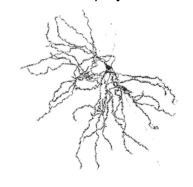
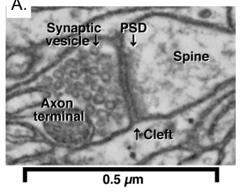
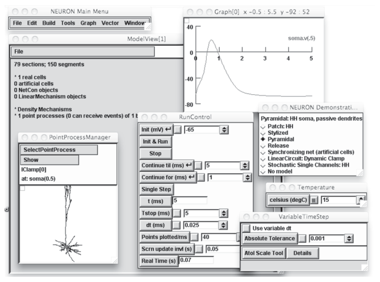

Phần II · Chương 4 — Nơ-ron và mô hình dựa trên độ dẫn
II
Nơ-ron
4 Nơ-ron và các mô hình dựa trên độ dẫn
Nơ-ron là những tế bào chuyên biệt cho phép thực hiện các cơ chế xử lý thông tin đặc thù trong não bộ. Chương này tóm tắt các chức năng cơ bản của nơ-ron và phác thảo một số quá trình sinh hóa thú vị của chúng. Các nội dung bao gồm tổng quan về synapse hóa học, tham số hóa đáp ứng của điện thế màng sau synapse đối với các sự kiện synapse, nguồn gốc của điện thế hoạt động và cách mô hình hóa chúng bằng các phương trình vi phân thanh nhã do Hodgkin và Huxley đề xuất, các dạng tổng quát hóa của mô hình dựa trên độ dẫn, và các mô hình khoang (compartmental models) tích hợp cấu trúc vật lý của nơ-ron. Phần tổng quan trong chương này nhằm biện minh cho các phép đơn giản hóa ở các mô hình tiếp theo và đề cập đến một số đặc tính của nơ-ron có thể hữu ích cho các nghiên cứu trong tương lai.
4.1 Cơ sở sinh học
Hệ thần kinh trung ương chủ yếu được cấu tạo từ hai loại tế bào chính là nơ-ron và tế bào thần kinh đệm (glial cells). Tế bào thần kinh đệm có số lượng áp đảo nơ-ron, và mặc dù trước đây chúng thường được xem là chỉ đảm nhận các chức năng hỗ trợ, ngày càng có nhiều bằng chứng cho thấy các loại tế bào thần kinh đệm khác nhau có nhiều chức năng xử lý tích cực hơn. Ví dụ, việc nghiên cứu các cơ chế xử lý tinh vi thông qua tương tác nơ-ron–tế bào thần kinh đệm và truyền tín hiệu qua các mạng lưới tế bào thần kinh đệm đang ngày càng gia tăng. Tế bào thần kinh đệm cũng có thể điều hòa tính dẻo synapse và có khả năng điều chỉnh lưu lượng máu dựa trên hoạt động của synapse. Tuy nhiên, chương này sẽ tập trung vào quá trình xử lý thông tin của các mạng nơ-ron. Để mô tả các mạng lưới gồm các phần tử giống nơ-ron, trước tiên chúng ta phải hiểu được hoạt động của từng nơ-ron đơn lẻ. Các vấn đề quan trọng bao gồm cơ chế truyền thông tin bên trong một nơ-ron và giữa các nơ-ron với nhau, cũng như cách mô hình hóa các nơ-ron phức tạp về mặt sinh học một cách đầy đủ để trả lời các câu hỏi khoa học cụ thể. Phần tổng quan sau đây chỉ đề cập đến một số khả năng tính toán tinh vi của nơ-ron, mà một số độc giả có thể muốn tìm hiểu sâu hơn qua tài liệu tham khảo ở cuối chương. Phần tổng quan này phác thảo ngắn gọn một số phương pháp tính toán dùng để mô tả nơ-ron đơn lẻ với các chi tiết lý sinh và hình thái học. Nghiên cứu bộ máy lý sinh trong các nơ-ron đơn lẻ là một lĩnh vực sôi động trong khoa học thần kinh tính toán. Trong khi phần lớn nội dung còn lại của cuốn sách dựa trên các mô hình được đơn giản hóa mạnh mẽ để khảo sát các tính chất của mạng lưới, mục đích chính của thảo luận trong chương này là giúp người đọc trân trọng sự phức tạp trong các quá trình của một nơ-ron đơn lẻ.
Nơ-ron là các tế bào sinh học và do đó có những đặc điểm chung của các tế bào khác, bao gồm thân tế bào (còn gọi là soma), nhân chứa DNA, ribosome tổng hợp protein từ các chỉ dẫn di truyền, và ty thể cung cấp năng lượng cho
Fundamentals of Computational Neuroscience. Third edition. Thomas P. Trappenberg, Oxford University Press. © Oxford University Press 2023. DOI:10.1093/oso/9780192869364.003.0004 tế bào. Ngược lại với các tế bào khác, nơ-ron chuyên biệt hóa cho việc xử lý tín hiệu bằng cách sử dụng các quá trình điện vật lý và hóa học đặc biệt. Nhiều tiến bộ đã đạt được trong việc làm sáng tỏ một số quá trình phức tạp đó. Ở đây chỉ điểm qua một số quá trình cơ bản.
4.1.1 Đặc điểm cấu trúc
Có rất nhiều loại nơ-ron khác nhau về kích thước, hình dạng hoặc đặc tính sinh lý. Tuy nhiên, có nhiều đặc điểm chung của nơ-ron, được tóm tắt ở đây bằng cách mô tả một nơ-ron điển hình như minh họa trong Hình 4.1A, đồng thời chỉ ra những điểm thường có sự biến thiên. Các đặc điểm cấu trúc chính gồm một thân tế bào (hay soma) và các phần kéo dài giống rễ cây gọi là các nhánh thần kinh (neurites). Các nhánh thần kinh được phân biệt thành các sợi tiếp nhận của nơ-ron, gọi là sợi nhánh (dendrites, từ tiếng Hy Lạp dendron nghĩa là cây), và một thân chính đi ra gọi là sợi trục (axon, từ tiếng Hy Lạp nghĩa là trục).
A. Nơ-ron sơ đồ B. Tế bào tháp
C. Tế bào hạt
Sợi nhánh
Đầu tận cùng sợi trục ức chế
Nhân
Đầu tận cùng sợi trục kích thích
Gò sợi trục
Thân tế bào (Soma)
Nút Ranvier
E. Tế bào Purkinje
Sợi trục
Sợi trục

D. Tế bào gai

Bao myelin
Khe synapse
Các nơ-ron sau synapse
Hình 4.1 (A) Sơ đồ nơ-ron có hình dạng tương tự tế bào tháp ở vỏ não mới. Các thành phần được vẽ là điển hình cho hầu hết các loại nơ-ron chính [phỏng theo Kandel, Schwartz, và Jessell, Principles of neural science, McGraw-Hill, ấn bản lần thứ 4 (2000)]. (B–E) Ví dụ về hình thái của các nơ-ron khác nhau. (B) Tế bào tháp từ vỏ não vận động [từ Cajal, Histologie du système nerveux de l’homme et des vertèbres, Maloin, Paris (1911)], (C) Nơ-ron hạt từ hành khứu giác của chuột [từ Greer, J. Comp. Neurol. 257: 442–52 (1987)], (D) Nơ-ron gai từ nhân đuôi [từ Kitai, trong GABA and the basal ganglia, Chiara và Gessa (chủ biên), Raven Press (1981)], (E) Tế bào Purkinje nhuộm Golgi từ tiểu não [từ Bradly và Berry, Brain Research 109: 133–51 (1976)].
Hình dạng của nơ-ron có thể thay đổi đáng kể, và các tiêu chí hình thái học đã được sử dụng làm hệ thống phân loại nơ-ron. Một số ví dụ về hình dạng nơ-ron được minh họa trong Hình 4.1B–E. Các nơ-ron phổ biến nhất ở vỏ não mới được phân thành nơ-ron tháp (pyramidal neurons) và nơ-ron sao (stellate neurons). Nơ-ron tháp, với một ví dụ được trình bày ở Hình 4.1B, là loại nơ-ron dồi dào nhất ở vỏ não mới, chiếm tới 75–90% số nơ-ron tại đó. Chúng có đặc trưng là thân tế bào hình tháp với một sợi trục thường kéo dài từ đáy của thân tế bào tháp (đáy nền). Các sợi nhánh của tế bào tháp có thể chia thành một cây sợi nhánh vươn xa từ đỉnh của thân tế bào lên lớp trên của vỏ não (sẽ được thảo luận thêm ở Chương 5), và các sợi nhánh đáy có tổ chức cục bộ hơn. Các nơ-ron này tạo tiếp xúc bất đối xứng với các nơ-ron khác và được cho là có tính kích thích.
Hai lớp nơ-ron khác cũng phổ biến ở vỏ não mới có hình dạng giống ngôi sao nên được gọi là nơ-ron sao (stellate neurons). Sợi nhánh của nơ-ron sao có gai (spiny stellate neurons, cũng như sợi nhánh của tế bào tháp) được bao phủ bởi nhiều cúc nhỏ gọi là gai (spines). Thông thường, nơ-ron sao có gai có tác dụng kích thích lên các tế bào khác. Ngược lại, các nơ-ron sao trơn (smooth stellate neurons) không có nhiều gai bao phủ và tạo các kết nối ức chế có hình dạng đối xứng với các nơ-ron khác.
Cần lưu ý rằng việc phân chia các nơ-ron vỏ não mới thành nơ-ron tháp và nơ-ron sao chỉ là một cách phân loại thô. Có thể chia theo nhiều cách khác, mặc dù sự phân biệt giữa các lớp khác nhau thường không dễ dàng nếu chỉ dựa vào hình dạng không gian. Một số nơ-ron được đặt tên riêng bao gồm tế bào Martinotti, chủ yếu nằm ở các lớp sâu hơn của vỏ não mới và mọc ra các sợi trục thường vươn tới lớp ngoài; tế bào giỏ (basket cells), là các tế bào sao trơn tạo synapse ưu tiên lên thân tế bào của tế bào tháp; và tế bào đèn chùm (chandelier cells), tạo synapse ưu tiên lên đoạn đầu của sợi trục tế bào tháp. Các đặc tính cấu trúc có những hệ quả tính toán cần được khám phá. Phần sau của chương này sẽ trình bày cách đưa hình thái tế bào vào các mô phỏng cụ thể của nơ-ron đơn lẻ.
4.1.2 Cơ chế xử lý thông tin
Nơ-ron có thể nhận tín hiệu từ rất nhiều nơ-ron khác, gọi là các sợi đến (efferents), thường vào khoảng 10.000 nơ-ron. Một số nơ-ron có ít sợi đến hơn nhiều, chẳng hạn như nơ-ron vận động ở thân não, và cũng có những tế bào nhận nhiều đầu vào hơn nữa, như tế bào tháp ở hồi hải mã được ước tính nhận khoảng 50.000 đầu vào. Các nơ-ron gửi tín hiệu tiếp xúc với nơ-ron nhận tại các vị trí chuyên biệt, ở thân tế bào hoặc trên các sợi nhánh. Nhà sinh lý học người Anh Charles Sherrington đã đặt tên cho các vị trí này là synapse. Nhiều cơ chế khác nhau được sử dụng để truyền thông tin giữa nơ-ron trước synapse (nơ-ron gửi tín hiệu) và nơ-ron sau synapse (nơ-ron nhận tín hiệu). Đặc điểm xử lý thông tin chung của synapse là chúng cho phép tín hiệu từ nơ-ron trước synapse làm thay đổi trạng thái của nơ-ron sau synapse, cuối cùng kích hoạt sự phát sinh một xung điện ở nơ-ron sau synapse. Xung điện này, tức điện thế hoạt động quan trọng, thường được khởi phát tại vùng gốc của sợi trục, gọi là gò sợi trục (axon-hillock), và sau đó truyền dọc theo sợi trục. Mỗi nơ-ron có một sợi trục rời khỏi soma, mặc dù sợi trục có thể phân nhánh và gửi thông tin đến các vùng khác nhau trong não. Ví dụ, một số nơ-ron lan truyền thông tin đến các nơ-ron ở vùng lân cận trong cùng cấu trúc thần kinh bằng các nhánh sợi trục gọi là nhánh bên sợi trục (axon collaterals), trong khi các sợi trục khác có thể đi xuyên qua chất trắng tới các vùng não khác. Chất trắng không chứa thân nơ-ron, mà chỉ chứa sợi trục và tế bào ít nhánh (oligodendrocytes), một loại tế bào thần kinh đệm đặc biệt tạo ra bao myelin cho sợi trục như mô tả ở phần sau. Tại nơi tiếp nhận, sợi trục thường tách thành nhiều nhánh nhỏ gọi là cành tận (arbors, tiếng Latin nghĩa là cây), với các đầu tận cùng sợi trục hay cúc tận cùng (axon terminals hoặc axon boutons, tiếng Pháp nghĩa là cúc áo) tạo thành một phần của synapse nối với các nơ-ron khác hoặc cơ.
4.1.3 Điện thế màng
Khả năng thay đổi điện thế nội tại của nơ-ron, tức điện thế màng, đóng vai trò quan trọng đối với năng lực truyền tín hiệu của nơ-ron. Điện thế màng, được ký hiệu là Vm, được định nghĩa là hiệu điện thế giữa bên trong tế bào và môi trường xung quanh nó. Bên trong tế bào trung hòa về điện khi các ion mang điện dương (cation) liên kết với các ion mang điện âm (anion). Nguồn gốc của sự chênh lệch điện thế này đến từ sự khác biệt nồng độ ion giữa bên trong và bên ngoài tế bào. Ví dụ, nồng độ ion kali (K+) bên trong tế bào lớn hơn khoảng hai mươi lần so với dịch xung quanh. Sự chênh lệch nồng độ này thúc đẩy dòng kali đi ra ngoài theo quá trình khuếch tán miễn là màng tế bào thấm qua được ion này. Tuy nhiên, màng nơ-ron không thấm qua các anion thường liên kết với kali, nên quá trình khuếch tán để lại lượng điện tích âm dư thừa bên trong nơ-ron và điện tích dương dư thừa trong dịch bao quanh nơ-ron.
Lực điện ngày càng tăng do sự chênh lệch điện thế màng gia tăng cuối cùng sẽ đủ mạnh để cân bằng với lực sinh ra bởi sự chênh lệch nồng độ kali giữa trong và ngoài tế bào. Do đó, lực điện sẽ cân bằng quá trình khuếch tán, và nơ-ron ổn định ở trạng thái cân bằng. Điện thế kết quả được mô tả chính thức bởi phương trình Nernst, liên hệ công cần thiết để bù đắp cho gradient khuếch tán với logarit của tỷ lệ nồng độ, nhiệt độ tuyệt đối và một số tham số đặc thù của hệ. Tính toán điện thế cân bằng cho kênh kali ở một nơ-ron điển hình cho giá trị khoảng EK = −80 mV, được gọi là điện thế đảo chiều (reversal potential) của kênh. Chỉ cần một tỷ lệ rất nhỏ ion K+ rời khỏi nơ-ron là đủ gây ra điện thế màng này. Các quá trình tương tự đối với những ion khác, đặc biệt là natri (Na+) vốn có nồng độ ở môi trường xung quanh nơ-ron cao hơn bên trong nơ-ron, cuối cùng dẫn đến điện thế nghỉ của nơ-ron, thường vào khoảng Vrest = −65 mV.
Tất nhiên, điều thú vị và quan trọng hơn có lẽ là nghiên cứu cách điện thế màng có thể bị thay đổi để truyền tải thông tin. Điện thế màng có thể bị biến đổi bởi nhiều cơ chế khác nhau mà từng loại nơ-ron chuyên biệt hóa cho chúng. Chẳng hạn, nơ-ron cảm giác chuyên chuyển đổi các kích thích bên ngoài thành tín hiệu điện; ví dụ bao gồm nơ-ron xúc giác nhạy cảm với áp suất và nơ-ron cảm quang ở võng mạc nhạy cảm với ánh sáng. Việc truyền thông tin giữa các nơ-ron, vốn là mối quan tâm chính của chúng ta trong cuốn sách này, được thực hiện theo nhiều cách. Ví dụ, synapse điện hay liên kết khe (gap-junctions) gồm các protein dẫn điện đặc biệt cho phép truyền trực tiếp tín hiệu điện từ giữa hai nơ-ron. Tuy nhiên, loại kết nối phổ biến nhất giữa các nơ-ron trong hệ thần kinh trung ương là synapse hóa học, sẽ được mô tả dưới đây.
4.1.4 Kênh ion
Tính thấm của màng tế bào đối với một số ion nhất định đạt được thông qua các kênh ion. Kênh ion là những loại protein đặc biệt nằm khảm trong màng tế bào (xem Hình 4.2). Các protein này tạo thành những lỗ nhỏ cho phép các ion cụ thể đi vào hoặc đi ra khỏi tế bào. Các ion phổ biến tham gia vào những quá trình như vậy trong hệ thần kinh gồm natri (Na+), kali (K+), canxi (Ca2+), và clo (Cl−). Các kênh ion duy trì điện thế nghỉ của nơ-ron thường mở suốt thời gian (xem Hình 4.2A). Do đó, thật hợp lý khi gọi chúng là kênh rò rỉ (leakage channels). Chúng ta sẽ sớm gặp các loại kênh ion khác có thể đóng mở dưới nhiều điều kiện khác nhau.
A. Kênh rò rỉ
B. Kênh cổng điện thế
C. Bơm ion
kênh ion
+
+ +
+ + + +
+ + + +
+
+ +
+ +
+
+
+
+
+
+
+
+
+
+
+
+
Kênh ion cổng chất dẫn truyền thần kinh
E. Chuyển hóa (Metabotropic)
D. Hướng ion (Ionotropic)
(chất truyền tin thứ hai)
+ + +
+ + +
+
+
+
+
+ + + +
+ + + +
+
+
+
+
+
+
Hình 4.2 Minh họa phác thảo các loại kênh ion khác nhau. (A) Kênh rò rỉ luôn mở. (B) Việc mở kênh ion cổng điện thế phụ thuộc vào điện thế màng. Điều này được biểu thị bằng một sợi dây nhỏ bên trong nơ-ron và một dây nối đất bên ngoài nơ-ron. Ngoài ra, các kênh ion như vậy cũng có thể được đóng mở bởi chất dẫn truyền thần kinh (không thể hiện trong hình này). (C) Bơm ion là các kênh ion vận chuyển ion ngược chiều gradient nồng độ. (D) Kênh ion hướng ion cổng chất dẫn truyền thần kinh mở ra khi một phân tử chất dẫn truyền thần kinh gắn vào protein kênh, làm thay đổi hình dạng của protein kênh để các ion đặc hiệu có thể đi qua. (E) Synapse chuyển hóa chỉ tác động lên kênh ion thông qua các chất truyền tin thứ cấp.
Việc truyền thông tin bên trong và giữa các tế bào phần lớn dựa trên các kênh ion. Phần tiếp theo mô tả chi tiết hơn các cơ chế này, bắt đầu với phần thảo luận về synapse hóa học và tiếp theo là sự phát sinh điện thế hoạt động ở Mục 4.3. Trong Mục 4.5, chúng ta ghép các mảnh ghép lại với nhau và mô tả chức năng chính của nơ-ron bằng mô hình khoang. Phần còn lại của

Ca Ca
Kênh Ca2+ cổng điện thế
Chất dẫn truyền thần kinh Túi synapse
Thụ thể chất dẫn truyền thần kinh
Hình 4.3 (A) Ảnh hiển vi điện tử của một đầu tận cùng synapse. Vùng đặc sau synapse (PSD) là vùng giàu protein ở đầu tận cùng sợi nhánh. Ảnh do Zeiss cung cấp tại https://blogs.zeiss.com/microscopy. (B) Sơ đồ minh họa synapse hóa học.
chương chứa phần thảo luận ngắn gọn về các mở rộng của những cơ chế cơ bản, trong khi Chương 5 tập trung vào các phép đơn giản hóa cho phép chúng ta nghiên cứu hành vi của các mạng nơ-ron lớn.
4.2 Cơ chế synapse và xử lý trên sợi nhánh
4.2.1 Synapse hóa học và chất dẫn truyền thần kinh
Synapse hóa học là lực lượng chủ lực của việc truyền thông tin nơ-ron trong hệ thần kinh động vật có vú. Ảnh hiển vi điện tử của một đầu tận cùng synapse được thể hiện trong Hình 4.3A, và sơ đồ phác họa trong Hình 4.3B. Các vị trí tiếp xúc này của nơ-ron gồm một phần mở rộng chuyên biệt trên sợi trục là đầu tận cùng sợi trục, và các vị trí tiếp nhận đặc hiệu trên sợi nhánh. Đầu tận cùng sợi trục của synapse hóa học có khả năng tổng hợp các chất hóa học đặc biệt gọi là chất dẫn truyền thần kinh (neurotransmitters), được cô đặc và lưu trữ trong các túi synapse. Khi điện thế hoạt động truyền tới, nó kích hoạt sự giải phóng ngẫu nhiên có xác suất các chất dẫn truyền thần kinh. Các chất dẫn truyền thần kinh được giải phóng khuếch tán qua khe synapse, một khoảng hở nhỏ chỉ vài micromet (1µm = 10−6m) giữa đầu tận cùng sợi trục và sợi nhánh của nơ-ron sau synapse.
Nhiều chất dẫn truyền thần kinh khác nhau đã được xác định trong hệ thần kinh. Các chất dẫn truyền thần kinh phổ biến trong hệ thần kinh trung ương bao gồm các phân tử hữu cơ nhỏ như glutamate (Glu) hoặc gamma-aminobutyric acid (GABA). Dopamine (DA) là một chất dẫn truyền thần kinh khác thu hút nhiều sự chú ý vì vai trò trong động lực, sự chú ý và học tập. Sự truyền synapse tại các khớp thần kinh-cơ, vốn quan trọng để khởi phát cử động cơ, chủ yếu được trung gian bởi acetylcholine (ACh), và các dây thần kinh cảm giác sử dụng nhiều chất dẫn truyền thần kinh khác.
Kênh ion cổng chất dẫn truyền thần kinh là các loại kênh ion đặc biệt ở sợi nhánh sau synapse đóng mở dưới sự điều hòa của chất dẫn truyền thần kinh. Khi không có mặt chất dẫn truyền thần kinh, kích thước lỗ kênh quá nhỏ để cho ion đi qua. Các kênh ion này mở ra khi chất dẫn truyền thần kinh gắn vào các vị trí tiếp nhận đặc hiệu của kênh ion, sau đó các ion có kích thước và hình dạng phù hợp có thể chảy qua chúng, làm thay đổi điện thế màng của tế bào. Đáp ứng ở điện thế màng này được gọi là điện thế sau synapse (postsynaptic potential - PSP). Lượng chất dẫn truyền thần kinh được nơ-ron trước synapse giải phóng nhiều hơn có thể kích hoạt đáp ứng mạnh hơn ở điện thế màng sau synapse, nhưng mối quan hệ này không nhất thiết phải tuyến tính; lượng chất dẫn truyền thần kinh gấp đôi hoặc số lượng synapse tham gia gấp đôi trong sự kiện synapse tổng thể không nhất thiết làm tăng điện thế màng lên gấp đôi.
Tác động của chất dẫn truyền thần kinh phụ thuộc vào loại thụ thể, sao cho cùng một chất dẫn truyền thần kinh có thể tạo ra các tác động khác nhau ở các nơ-ron sau synapse. Các thụ thể gắn chặt với một kênh ion được gọi là hướng ion (ionotropic) và được minh họa trong Hình 4.2D. Các kênh ion cổng chất dẫn truyền thần kinh như vậy thường mở rất nhanh sau khi gắn kết chất dẫn truyền thần kinh. Ngược lại, các synapse chuyển hóa (metabotropic), được mô phỏng ở Hình 4.2E, chỉ tác động lên kênh ion thông qua các chất truyền tin thứ cấp nên chậm hơn và kém đặc hiệu hơn nhiều.
4.2.2 Synapse kích thích / ức chế
Các loại chất dẫn truyền thần kinh khác nhau và các kênh ion đi kèm có tác động khác nhau lên trạng thái của nơ-ron tiếp nhận. Một lớp chất dẫn truyền thần kinh quan trọng mở các kênh cho phép các ion mang điện dương đi vào tế bào. Do đó, các chất dẫn truyền thần kinh này kích hoạt sự gia tăng điện thế màng, đẩy các nơ-ron sau synapse tiến về trạng thái hưng phấn. Quá trình này (và đôi khi gọi đơn giản là synapse) do đó được gọi là kích thích (excitatory). Các kênh synapse đóng mở bởi chất dẫn truyền thần kinh Glu là một ví dụ rất phổ biến về synapse kích thích với nhiều loại thụ thể khác nhau. Một thụ thể Glu hướng ion nhanh được gọi là AMPAR vì nó có thể được hoạt hóa bởi hóa chất tổng hợp α-amino-3-hydroxy-5-methylisoxazole-4-propionic acid. Một thụ thể Glu khác gọi là NMDAR vì nó có thể được hoạt hóa bởi hóa chất tổng hợp N-methyl-D-aspartate; thụ thể này chậm hơn nhiều và phụ thuộc vào điện thế. Sự phụ thuộc điện thế bắt nguồn từ việc các kênh này bị chặn bởi ion magie (Mg2+) ở trạng thái nghỉ của nơ-ron, ngay cả khi Glu đã gắn vào. Các ion Mg2+ chỉ có thể bị đẩy ra thông qua sự khử cực điện thế màng, chẳng hạn như nhờ các điện thế hoạt động truyền ngược (back-propagating action potentials - BAPs) được giải thích bên dưới. Chỉ sau khi loại bỏ magie thì natri và canxi, hai ion chính có thể đi qua kênh này, mới đi vào được nơ-ron. Trong Chương 6, chúng ta sẽ thảo luận tầm quan trọng của các cơ chế này đối với tính dẻo synapse.
Ngược lại với synapse kích thích, một số kênh ion cổng chất dẫn truyền thần kinh có thể kéo điện thế sau synapse về phía điện thế nghỉ hoặc ức chế tác động của synapse kích thích. Những synapse như vậy được gọi chung là ức chế (inhibitory). Một ví dụ nổi bật về synapse ức chế sử dụng chất dẫn truyền thần kinh GABA với một thụ thể nhanh gọi là GABAA và một thụ thể chậm hơn gọi là GABAB. Chất dẫn truyền thần kinh DA có nhiều loại thụ thể, một số mang tính kích thích và một số mang tính ức chế. Sự ức chế có thể mang tính trừ (subtractive) theo nghĩa làm giảm điện thế màng. Tuy nhiên, sự ức chế cũng có thể mang tính chia (divisive) theo nghĩa điều biến tác động của sự kích thích. Ví dụ, thụ thể GABAA không có tác động lên điện thế màng nếu điện thế màng đang ở trạng thái nghỉ, nên nó không làm giảm điện thế thêm nữa. Các synapse ức chế nằm gần thân tế bào có thể có các tác động điều biến (nhân) như vậy lên tổng các điện thế sau synapse kích thích (EPSP). Dạng ức chế như vậy còn được gọi là ức chế rẽ mạch (shunting inhibition).
4.2.3 Mô hình hóa đáp ứng synapse
Như đã đề cập ở trên, sự biến thiên của điện thế màng được khởi phát từ một xung trước synapse có thể được mô tả như một điện thế sau synapse (PSP). Synapse kích thích làm tăng điện thế màng, tạo ra điện thế sau synapse kích thích (EPSP). Ngược lại, điện thế sau synapse ức chế (IPSP) là các đáp ứng làm giảm điện thế màng. Dạng của IPSP thường có thể được mô hình hóa tương tự EPSP nhưng với dòng điện âm. Ở đây chúng ta chỉ mô tả một cách triển khai tổng quát cho PSP qua trung gian kênh ion.
Diễn biến theo thời gian đo được bằng thực nghiệm của một PSP sau một sự kiện trước synapse, đặc biệt đối với thụ thể kích thích nhanh AMPA và thụ thể ức chế GABA, có thể được tham số hóa bởi hàm m = At e−t/tpeak, (4.1)
V non−NMDA
trong đó ∆Vm ký hiệu hiệu số giữa điện thế màng và điện thế nghỉ, A là tham số biên độ, và tpeak là thời điểm hàm này đạt giá trị cực đại. Các đáp ứng synapse thuộc các loại trên thường diễn ra nhanh, với thời gian đạt đỉnh khoảng 0.5–2ms. Hàm trên đôi khi được gọi là hàm alpha trong khoa học thần kinh.
Chúng ta có thể vẽ đồ thị hàm này bằng chương trình Python Synapse.py sau đây. Đây chính thức là chương trình mô phỏng đầu tiên của chúng ta.
Programs/Synapse.py 1 # v o l t a g e over time f o r non−NMDA synapse 2 import numpy as np 3 import m a t p l o t l i b . pyplot as p l t 4 5 t = np . arange ( 0 , 1 0 , 0 . 1 ) 6 v = t ∗np . exp(−t / 2 ) 7 p l t . p l o t ( t , v ) ; p l t . x l a b e l ( " t " ) ; p l t . y l a b e l ( "v" )
Trong hàm này, chúng ta chưa đưa vào độ trễ synapse điển hình của PSP sau khi nơ-ron trước synapse phát xung. Độ trễ này gây ra bởi thời gian cần thiết để giải phóng chất dẫn truyền thần kinh ở đầu tận cùng sợi trục, thời gian của quá trình khuếch tán chất dẫn truyền thần kinh, và thời gian cần để mở các kênh. Tất cả các quá trình này thường diễn ra nhanh (thường dưới 1 ms) và có thể được cộng trực tiếp vào trong các mô phỏng mạng. Lưu ý rằng mặc dù ở đây ta coi độ trễ synapse là không đáng kể, nhưng ở Chương 7 chúng ta sẽ lập luận rằng độ trễ giữa các sự kiện trước synapse và sau synapse, gọi là độ trễ sợi trục (axional delays), có thể lớn và biến thiên.
Hàm alpha có thể được triển khai bằng một mô hình cơ bản thường dùng để mô tả synapse hóa học. Theo đó, ta coi một đoạn sợi nhánh như một khoang đơn giản gồm một tụ điện có rò rỉ (tụ điện mắc cùng một điện trở hằng số) đi kèm với một điện trở cổng chất dẫn truyền thần kinh, như minh họa trong Hình 4.4A. Mỗi điện trở cũng được cấp một nguồn pin biểu diễn sự chênh lệch nồng độ ion bên trong và bên ngoài tế bào (điện thế Nernst). Hiệu ứng tổng hợp của các thành phần khác nhau có thể dễ dàng được biểu diễn bằng cách xét định luật bảo toàn điện tích. Điều này được hình thức hóa trong định luật Kirchhoff, dVm(t)
dt = −I, (4.2)
cm trong đó cm là điện dung của khoang sợi nhánh và dấu trừ ở vế phải là quy ước trong khoa học thần kinh, nơi dòng điện được đo theo chiều chảy từ ngoài tế bào vào trong tế bào.
A. Mạch điện của synapse cơ bản
B. Diễn biến theo thời gian của các biến
4 g (t)*5 syn g L g
Tụ điện
V (t)
2 m
C
Điện trở
m
0
Pin
I (t)/5 syn
0 2 4 6 8 10 −2
Thời gian
Hình 4.4 (A) Mạch điện của một khoang sợi nhánh đơn giản để mô phỏng PSP với điện dung cm, độ dẫn gL của kênh rò rỉ, độ dẫn phụ thuộc thời gian g của kênh ion cổng chất dẫn truyền thần kinh và pin mô tả điện thế cân bằng của kênh ion cổng chất dẫn truyền thần kinh. Không có pin cho kênh rò rỉ vì điện thế nghỉ của mạch được đặt bằng không. (B) Kết quả tích phân số của mô hình khoang sợi nhánh. Thể hiện diễn biến theo thời gian của độ dẫn g(t), dòng điện synapse Isyn(t), và điện thế màng V (t). Độ dẫn và dòng điện được chia tỷ lệ để dễ quan sát hơn, và các đơn vị tương ứng với giá trị số dùng trong các mô phỏng thảo luận bên dưới.
Phương trình 4.2 là một phương trình vi phân tuyến tính. Phương trình vi phân mô tả sự biến thiên vi phân của một đại lượng (trong ví dụ này là điện áp) theo thời gian, và sự biến thiên này được cho bởi một hàm ở vế phải. Giải phương trình vi phân nghĩa là tìm ra diễn biến theo thời gian của đại lượng đó, dx(t)
dt = f(x, t, ...) ⇒ x(t) =? (4.3)
Chúng ta sẽ chủ yếu giải các phương trình này bằng phương pháp số với các chương trình mô phỏng. Tích phân số trong hoàn cảnh này đơn giản là cộng tất cả các thay đổi, như được cho bởi hàm ở vế phải, từ một trạng thái ban đầu. Các mô hình thường được xây dựng bằng phương trình vi phân, và do đó độc giả nên xem lại phần giới thiệu ngắn gọn về phương trình vi phân ở Chương 3.4 nếu chưa quen thuộc với các khái niệm này.
Trong mô hình synapse, dòng điện I được tạo ra bởi hai kênh: một kênh rò rỉ với độ dẫn (nghịch đảo của điện trở) gL và điện thế đảo chiều bằng không (điện thế nghỉ của khoang này vì chúng ta đo mọi thứ tương đối so với điện áp này), và kênh ion synapse cổng chất dẫn truyền thần kinh với độ dẫn biến thiên theo thời gian gsyn(t) và điện thế đảo chiều Esyn. Mối quan hệ giữa điện thế, dòng điện và độ dẫn được cho bởi định luật Ohm (I = gV ),
I(t) = gLV (t) −gsyn(t)(Vm(t) −Esyn). (4.4)
Diễn biến theo thời gian của độ dẫn synapse biến thiên được mô hình hóa tiếp bằng một mô hình đơn giản về động lực học kênh trung bình. Trong mô hình này, ta giả sử nhiều kênh mở ra ngay lập tức sau khi gắn chất dẫn truyền thần kinh, nhưng đóng lại một cách ngẫu nhiên giống như vật liệu phân rã phóng xạ. Quá trình mở-và-suy-giảm này được mô hình hóa như sau: dgsyn(t)
dt = −gsyn(t) + δ(t −tpre −tdelay), (4.5)
τsyn trong đó hàm delta δ() là một cách thuận tiện để biểu diễn một số hạng có đóng góp lớn vô hạn trong một khoảng thời gian nhỏ vô hạn, khi đối số của nó bằng không. Đóng góp vào tổng (hoặc tích phân) là hữu hạn (xem Chương 3.3). Trong trường hợp trên, một đóng góp được thực hiện tại thời điểm tdelay sau một xung trước synapse xảy ra tại tpre. Ở các thời điểm khác, phương trình này đơn giản cho kết quả là một sự suy giảm hàm mũ với hằng số thời gian τsyn (xem Chương 3.4).
Dưới đây chúng ta thảo luận một chương trình Python triển khai các phương trình trong mục này và giải chúng bằng phương pháp số. Kết quả của phép tích phân số này sau khi gắn kết chất dẫn truyền thần kinh tại thời điểm t = 1 được thể hiện ở Hình 4.4B. Diễn biến theo thời gian của g(t) được vẽ bằng đường nét đứt và chính xác là một sự suy giảm hàm mũ. Việc mở kênh tạo ra một dòng điện synapse Isyn qua kênh ion cổng chất dẫn truyền thần kinh (đường chấm chấm), trong đó lượng dòng điện không chỉ phụ thuộc vào độ dẫn của kênh ion, mà còn phụ thuộc vào điện áp của màng tương đối so với điện thế đảo chiều của kênh này. Do đó, nếu kênh synapse giữ trạng thái mở, hệ thống sẽ đi đến trạng thái cân bằng nơi dòng điện synapse khớp với dòng rò rỉ, và điện áp ổn định ở một giá trị trung gian giữa không và điện thế đảo chiều. Tuy nhiên, các kênh cổng chất dẫn truyền thần kinh cũng đóng lại nhanh chóng để khoang synapse cuối cùng suy giảm về trạng thái nghỉ.
Mô phỏng
Bây giờ chúng ta đã sẵn sàng thảo luận chi tiết chương trình mô phỏng lớn đầu tiên. Ở một mức độ nào đó, độ phức tạp của các mô phỏng cũng chỉ đến thế này. Chương trình này là một ví dụ quan trọng trong khoa học thần kinh và mô phỏng một synapse bằng cách thực hiện tích phân số các phương trình vi phân ghép cặp đã giải thích trước đó. Phần lớn các mô phỏng của chúng ta có dạng tích phân số các phương trình vi phân như vậy. Thực vậy, các chương trình sau này có thể trông khó hơn chỉ vì chúng tích hợp một số khái niệm trừu tượng hơn. Trước tiên chúng ta cũng cần làm quen với ngôn ngữ lập trình Python và cách nó được sử dụng trong bối cảnh này.
Programs/EPSP.py 1 # Synaptic conductance model to s i m u l a t e an EPSP 2 import m a t p l o t l i b . pyplot as p l t 3 4 # S e t t i n g some c o n s t a n t s and i n i t i a l values 5 c m =1; V l =0; V s =10; tau =1; dt = 0 . 1 ; 6 g l =1; g s = [ 0 ] ; 7 I l = [ 0 ] ; I s = [ 0 ] ; 8 v m = [ 0 ] ; t = [ 0 ] ; 9 10 # Numerical i n t e g r a t i o n using Euler scheme 11 f o r s t e p in range (1 , i n t ( 1 0 / dt ) ) :
12 # recor d the time ( in ms) in s l o t s t e p of v e c t o r t 13 t . append ( t [ step −1]+ dt ) 14 # s i m u l a t e opening s y n a p t i c ch anels around t =1ms 15 i f abs ( t [ s t e p ]−1) < 0.0001: g s [ step −1] = 1; 16 # c a l c u l a t e the c u r r e n t s a t t h i s time 17 I l . append ( g l ∗( v m [ step −1]−V l ) ) 18 I s . append ( g s [ step −1] ∗( v m [ step −1]−V s ) ) 19 # update conductance and membrane p o t e n t i a l 20 g s . append ( g s [ step −1]−dt / tau ∗g s [ step −1]) 21 v m . append ( v m [ step −1]−dt / c m ∗( I l [ s t e p ]+ I s [ s t e p ] ) ) 22 23 p l t . p l o t ( t , v m , ’k ’ ) ;
Chương trình mô phỏng synapse dựa trên độ dẫn cơ bản để tạo ra Hình 4.4B được gọi là EPSP.py. Chương trình này không chỉ minh họa một mô hình dựa trên độ dẫn cơ bản, mà còn là ví dụ đầu tiên về chương trình mô phỏng dựa trên tích phân số. Thuật toán nguyên lý được triển khai trong chương trình này là giải một phương trình vi phân thường có dạng phương trình 4.3 bằng một quá trình lặp rời rạc, x(t + ∆t) = x(t) + ∆tf(x, t, ...), (4.6)
tính toán giá trị của biến ở chỉ số thời gian tiếp theo (sau một bước thời gian) từ giá trị ở chỉ số thời gian hiện tại cộng với bước thời gian nhân với lượng thay đổi được xác định trong hàm f. Vì đây là chương trình mô phỏng lớn đầu tiên trong cuốn sách này, chúng ta sẽ mô tả từng dòng của chương trình như sau.
Trong Python, mọi đoạn văn bản đứng sau dấu thăng, #, là chú thích và sẽ không được trình thông dịch Python thực thi. Đôi khi chúng ta bắt đầu chương trình bằng một chú thích nêu ngắn gọn mục đích của chương trình ở Dòng 1. Sau đó ta nhập (import) các thư viện cần thiết cho những hàm cụ thể như hàm vẽ đồ thị trong chương trình này. Các hằng số sau đó thường được thiết lập ở khối mã tiếp theo để dễ dàng tìm và thay đổi cho các thí nghiệm khác nhau. Các hằng số này bao gồm điện dung của màng, c m, độ dẫn của kênh rò rỉ, g L, hằng số thời gian thiết lập thang thời gian mở (hay đúng hơn là đóng) của kênh ion synapse, tau syn, và điện thế đảo chiều của kênh ion synapse, E syn. Tham số cuối cùng là bước thời gian tích phân, delta t, thiết lập độ phân giải (thời gian) của mô phỏng. Lưu ý rằng tất cả các tham số đều là các con số và không mang đơn vị. Một chương trình mô phỏng số không thể xử lý đơn vị vật lý và chúng ta phải tự đảm bảo các giá trị nằm trong đúng đơn vị phù hợp. Ví dụ, ta có thể diễn giải thang thời gian theo mili giây (ms), sao cho bước thời gian tích phân là ∆t = 0.01 ms. Độ dẫn của kênh rò rỉ có thể là 1 Siemens (S), là nghịch đảo của điện trở đo bằng Ohm. Một giá trị điển hình hơn là tổng độ dẫn các kênh rò rỉ trên một xăng-ti-mét vuông (cm2) màng vào khoảng vài miliSiemens (mS). Độ dẫn của các kênh khác khi đó phải được chỉ định theo cùng đơn vị, và các đại lượng khác phải được chọn một cách nhất quán. Chúng ta cũng đưa vào các giá trị ban đầu cho những biến sẽ thay đổi theo thời gian. Các đại lượng này gồm độ dẫn của kênh ion synapse, g syn[0], được đặt bằng không để kênh đóng lúc bắt đầu mô phỏng. Do đó, dòng điện tương ứng, I syn[0], cũng bằng không. Mặc dù ta tính dòng điện từ độ dẫn và điện thế màng ở phần sau, ta vẫn đưa giá trị này vào một cách tường minh cho chỉ số thời gian đầu tiên, i=0, vì vòng lặp bên dưới bắt đầu tại chỉ số thời gian i=1 (chỉ số sau một bước thời gian). Ta cũng bắt đầu với điện thế màng bằng không tại chỉ số thời gian đầu tiên, v m[0]=0, và đặt đồng hồ cho chỉ số thời gian đầu tiên bằng không, t[0]=0.
Quá trình tích phân số các phương trình vi phân, vốn xác định mô hình, bắt đầu ở Dòng 11. Phép tích phân số được thực hiện bằng phương pháp Euler (xem Chương 3.4), đơn giản là cộng thêm các thay đổi vào trạng thái ban đầu sau mỗi bước tích phân. Biến đếm cho bước thời gian (chỉ số) được đặt là biến i. Vòng lặp quy định nó bắt đầu từ giá trị 1 và tăng thêm 1 cho đến khi chỉ số bằng 10/0.01=1000. Thời gian này tương ứng với 10 ms, hay chính xác hơn là 9.99 ms vì ta đặt thời gian cho chỉ số đầu tiên bằng không. Thời gian thực tế được cập nhật ở mỗi bước tại Dòng 13 và lưu trong vectơ t.
Các dòng tiếp theo triển khai phương trình 4.5. Dòng 15 mô phỏng việc mở kênh ion synapse sau khi gắn kết chất dẫn truyền thần kinh tại thời điểm t = 1 ms bằng cách đặt độ dẫn ở bước thời gian trước đó bằng một, điều được biểu diễn về mặt toán học như hàm delta trong phương trình 4.5. Chúng ta ghi đè giá trị của bước thời gian trước đó vì giá trị này được dùng ở dòng tiếp theo để tính giá trị thực tế tại bước thời gian hiện tại. Câu lệnh if có thể có hình thức hơi bất ngờ. Người ta có thể ngờ một câu lệnh như if t[i] == 1: .... Vấn đề với câu lệnh này là vế trái và vế phải phải giống hệt nhau từng bit một. Ví dụ, 1.000000000001 không bằng 1. Để đảm bảo câu lệnh if bắt trúng thời điểm trong vùng lân cận phù hợp, thay vào đó ta yêu cầu hiệu tuyệt đối giữa t[i] và 1 phải nhỏ hơn một giá trị nhỏ.
Dòng 17 và các dòng tiếp theo là phần mô phỏng động lực học của kênh ion khi không có thành phần hàm delta trong phương trình 4.5. Giá trị ban đầu của độ dẫn này bằng không, và nó sẽ giữ nguyên như vậy cho đến khi ta buộc nó mở ra tại t = 1 ms ở Dòng 15. Sau đó nó sẽ suy giảm vì đoạn mã quy định giá trị mới của độ dẫn sẽ bằng ‘một trừ đi một chút’ của giá trị ở thời điểm trước đó. Sự sụt giảm của giá trị này tỷ lệ thuận với chính giá trị đó, vốn là đặc trưng của sự suy giảm hàm mũ. Điều này có thể thấy trong nghiệm, tức đường nét đứt ở Hình 4.4B. Như đã lập luận ở trên, chúng ta có thể coi động lực học này như số lượng kênh mở trung bình khi các kênh đóng lại ngẫu nhiên giống như trong phân rã phóng xạ. Do đó, mô phỏng này không bao gồm động lực học chính xác của từng kênh ion riêng lẻ, mặc dù chúng ta hoàn toàn có thể xây dựng các mô hình như vậy.
4.2.4 Các cấp độ mô hình hóa khác nhau
Thật tốt khi dừng lại một chút để nhận ra rằng chúng ta đã xây dựng hai mô hình quan trọng mô tả diễn biến theo thời gian của điện thế màng tại một synapse sau khi chất dẫn truyền thần kinh kích hoạt đáp ứng này. Mô hình đầu tiên, ở phương trình 4.1, hoàn toàn mang tính phỏng nghiệm (heuristic). Nghĩa là chúng ta chỉ đơn thuần mô tả các quan sát thực nghiệm bằng cách đưa ra một hàm toán học bắt chước diễn biến theo thời gian này ở một mức độ nào đó. Các mô hình như vậy có thể rất hữu ích trong nhiều hoàn cảnh. Chẳng hạn, ta có thể dùng hàm này làm đầu vào khi mô hình hóa sự lan truyền tiếp theo của tín hiệu trong các sợi nhánh.
Tuy nhiên, mô hình thuần túy mô tả này không hữu ích lắm khi cần mô tả quá trình gây ra hành vi đó. Mô hình thứ hai của chúng ta dựa trên các cơ chế cơ bản hơn diễn ra trong quá trình synapse. Mô hình này, được mô tả bởi các phương trình 4.2, 4.4, và 4.5, sử dụng các mô tả vật lý về dòng điện đáp ứng với sự thay đổi độ dẫn để tính toán diễn biến theo thời gian của điện thế màng. Đầu vào then chốt trong mô hình này là sự thay đổi độ dẫn synapse do việc mở một kênh ion được mô tả bởi phương trình 4.5. Như đã đề cập, điều này về cơ bản chỉ mô tả sự suy giảm hàm mũ của độ dẫn sau khi mở tức thời tại tpre+tdelay. Bản thân điều này cũng chỉ là một mô tả vĩ mô của các quá trình lý sinh nền tảng. Nghiên cứu sâu hơn đã chỉ ra rằng từng kênh ion riêng lẻ đóng lại một cách ngẫu nhiên sau khi được mở, dẫn đến sự suy giảm hàm mũ trong tác động trung bình của chúng lên độ dẫn synapse. Tất nhiên, chúng ta có thể xây dựng các mô hình mô tả những hành vi này chi tiết hơn.
Mô hình trên và cách diễn giải nó là một phép xấp xỉ thô của các quá trình synapse. Trong thực tế, có một sự tương tác phức tạp giữa các kênh ion khác nhau và thậm chí giữa các tiểu đơn vị của thụ thể. Các tham số cm, g0, Esyn, τsyn do đó không có mối liên hệ trực tiếp với các kênh ion cụ thể và có thể được chọn tùy ý để khớp với dữ liệu thực nghiệm. Quá trình xử lý trên sợi nhánh còn được làm phong phú thêm bởi nhiều cơ chế khác, như các sóng canxi liên sợi nhánh và BAP liên quan đến các cơ chế phát xung tích cực, như sẽ thảo luận ở phần tiếp theo. Tế bào thần kinh đệm cũng có thể ảnh hưởng đến synapse, ví dụ bằng cách điều hòa sự giải phóng túi synapse thông qua tín hiệu canxi. Mô hình synapse tổng quát trên không cố gắng giải thích hoạt động chi tiết của synapse, mà đúng hơn, nên được xem là một mô hình hiện tượng học nhằm tham số hóa các phát hiện thực nghiệm cho thuận tiện.
Điện thế có tính chất vật lý là chúng chồng chất như tổng của các điện thế thành phần. Nhiều mô hình được thảo luận trong tài liệu khoa học sử dụng phép chồng chất tuyến tính của đầu vào synapse, nghĩa là các đầu vào đơn giản được cộng dồn trong các mô hình nơ-ron. Tuy nhiên, điều quan trọng là phải nhớ rằng điện thế màng của một nơ-ron phụ thuộc vào nhiều yếu tố khác, chẳng hạn như hình dạng vật lý của các sợi nhánh, sự phụ thuộc điện thế của một số kênh, và các tương tác khác giữa các kênh ion synapse. Ngoài ra, một số nghiên cứu cho thấy tín hiệu canxi liên bào phức tạp và sự tương tác của synapse với thông tin di truyền. Hầu hết các mô hình tính toán hiện nay ở cấp độ mạng chủ yếu giả định các cơ chế phát xung khuôn mẫu hơn nhiều như chúng ta sẽ mô tả tiếp theo. Tuy nhiên, khả năng to lớn của tính toán sợi nhánh tinh vi đã khiến một số người, như Carver Mead, suy đoán rằng tính toán sợi nhánh có thể dẫn đến việc xây dựng các hệ thống thực sự thông minh.
Các tương tác phi tuyến giữa các đầu vào synapse có thể bổ sung đáng kể cho năng lực xử lý thông tin của mạng nơ-ron. Chúng ta sẽ thảo luận một số ví dụ trong cuốn sách này, mặc dù lĩnh vực này phần lớn vẫn chưa được khám phá. Tuy nhiên, các mô hình synapse cơ bản được giới thiệu trong chương này đã đủ để khám phá nhiều đặc điểm của nơ-ron phát xung và mạng lưới. Mô hình này đủ cho hầu hết các thảo luận trong cuốn sách này và phần lớn tài liệu tính toán ở cấp độ mạng. Nếu cần thiết, có thể đưa thêm nhiều chi tiết về cơ chế sinh hóa và vật lý nền tảng vào mô hình, nhưng như chúng tôi đã nhấn mạnh ở Chương 1, mục tiêu của chúng ta ở đây không phải là tái tạo mọi chi tiết của não bộ, mà là trích xuất các cơ chế thiết yếu giải thích các chức năng của não.
4.3 Sự phát sinh điện thế hoạt động: Hodgkin–Huxley
Như đã thảo luận ở mục trước, điện thế màng sợi nhánh của một nơ-ron có thể bị thay đổi bởi việc giải phóng chất dẫn truyền thần kinh từ nơ-ron trước synapse làm mở các kênh ion synapse đặc hiệu và cho phép các ion đi ra hoặc đi vào nơ-ron. Điều này xảy ra ở đầu tiếp nhận của nơ-ron trong cây sợi nhánh. Bây giờ chúng ta chuyển sang các dòng điện màng ở sợi trục, đầu gửi tín hiệu của nơ-ron ở phía bên kia của nhân. Loại màng này có khả năng kích hoạt các biến đổi điện áp sắc nét và mạnh mẽ, gọi là điện thế hoạt động (action potentials), thường gọi đơn giản là xung (spike). Một thành phần quan trọng của các khoang sợi trục là các kênh ion nhạy cảm với điện thế. Vì vậy, trái ngược với các kênh ion synapse chủ yếu được kích hoạt bởi chất dẫn truyền thần kinh, các kênh ion này thay đổi độ dẫn khi chính điện thế màng thay đổi. Lưu ý rằng mặc dù các cơ chế này theo truyền thống được gắn với quá trình xử lý ở sợi trục, cũng có những cơ chế ở sợi nhánh có thể tạo ra cái gọi là điện thế hoạt động truyền ngược. Tuy nhiên, trọng tâm của chúng ta ở đây là mô hình tối thiểu kinh điển do Alan Hodgkin và Andrew Huxley đề xuất. Hai nhà nghiên cứu này đã đề xuất mô hình với các tham số đo từ sợi trục khổng lồ của mực ống, mặc dù hóa ra mô hình của họ với các tham số tương đương cũng mô tả được điện thế hoạt động ở tế bào tháp của động vật có xương sống. Một đường ghi nguyên bản của họ về điện thế hoạt động được thể hiện ở Hình 4.5. Nó đặc trưng bởi sự tăng vọt (khử cực) của điện thế màng lên các giá trị dương, tiếp theo là sự giảm mạnh điện thế màng, vượt quá (siêu phân cực) điện thế nghỉ của nơ-ron trước khi quay trở lại điện thế nghỉ.
Khử cực do các kênh natri Bất hoạt kênh natri & mở kênh kali
+40
Xung (Spike)
0 Điện thế nghỉ (các kênh rò rỉ)
Đóng các kênh natri & kali
-70
Siêu phân cực
Hình 4.5 Dạng điển hình của một điện thế hoạt động; vẽ lại từ ảnh dao động ký của Hodgkin và Huxley (1939).
Đó là một thành tựu khoa học to lớn của Hodgkin và Huxley khi họ mô tả định lượng dạng của điện thế hoạt động bằng các phương trình được tóm tắt trong mục này. Không chỉ vẻ đẹp của phép mô tả đã làm nên tên tuổi của họ, mà còn là việc họ đã định lượng quá trình dẫn đến sự phát sinh điện thế hoạt động bằng các số hạng toán học mà sau này được nhận diện chính là các kênh ion. Mô hình của họ đưa ra những dự đoán cụ thể có thể kiểm chứng bằng thực nghiệm và qua đó định hướng cho nhiều nghiên cứu và phát hiện tiếp theo. Bài báo gốc của họ trên tạp chí Journal of Physiology năm 1952 vẫn rất đáng đọc và là một ví dụ xuất sắc về công trình định lượng trong khoa học thần kinh tính toán.
4.3.1 Các cơ chế tối thiểu
Ít nhất hai loại kênh ion phụ thuộc điện thế và một loại kênh ion tĩnh là cần thiết cho việc phát sinh một xung, như minh họa trong Hình 4.6. Trái ngược với các kênh ion cổng chất dẫn truyền thần kinh được thảo luận ở mục trước, các kênh ion phụ thuộc điện thế đóng mở như một hàm của điện áp màng, như ký hiệu trong Hình 4.2B. Một kênh natri phụ thuộc điện thế chịu trách nhiệm cho pha đi lên của điện thế hoạt động. Khi các kênh ion cổng chất dẫn truyền thần kinh khử cực nơ-ron đủ mức, các kênh natri (Na+) phụ thuộc điện thế mở ra, dẫn đến dòng Na+ tràn vào do điện thế âm và nồng độ Na+ bên trong tế bào thấp hơn. Sự chi phối của kênh natri đẩy điện thế màng tiến gần đến điện thế nghỉ của natri, vào khoảng Vm = +65 mV.
Khử cực
+ Na + Na + Na
Điện thế nghỉ
+ Na
+ Na
+ Na + K
+ Na + Na
+ Na
+ Na + Na + Na
+ Na
+ K
+ K
+ K + K
+ K
+ K
+ K
+ K
+ K
+ K
+ K
+ K
+ K + K
+ K
+ K
+ K
Siêu phân cực
+ Na + Na + Na + Na
+ Na + Na
+ K
+ K
+ K
+ K
+ K
+ K
+ K
+ K
+ K + K
Hình 4.6 Sơ đồ minh họa các cơ chế tối thiểu cần thiết để phát sinh một xung. Điện thế nghỉ của tế bào được duy trì bởi các kênh rò rỉ cho phép ion kali chảy qua do sự chênh lệch nồng độ giữa bên trong tế bào và dịch xung quanh. Các kênh natri cổng điện thế cho phép dòng ion natri mang điện dương đi vào và qua đó khử cực tế bào. Sau một thời gian ngắn, các kênh natri bị chặn và các kênh kali cổng điện thế mở ra. Điều này dẫn đến sự siêu phân cực của tế bào. Cuối cùng, sự siêu phân cực làm bất hoạt các kênh cổng điện thế và đưa tế bào trở về điện thế nghỉ.
Hai quá trình góp phần gây ra pha đi xuống tiếp theo. Thứ nhất, các kênh natri bị bất hoạt do kênh bị chặn bởi một phần protein cấu tạo nên kênh, khoảng 1 ms sau khi kênh mở. Thứ hai, một loại kênh phụ thuộc điện thế khác là kênh kali (K+) mở ra, dẫn đến dòng K+ đi ra ngoài. Trái ngược với kênh natri phụ thuộc điện thế mở ra gần như tức thời sau khi vượt ngưỡng, kênh kali phụ thuộc điện thế mở khoảng 1 ms sau pha khử cực ban đầu của điện thế hoạt động. Sự chi phối của các kênh kali kéo điện thế màng tiến gần đến cân bằng kali khoảng Vm = −80 mV, vượt quá điện thế nghỉ bình thường của nơ-ron. Sự siêu phân cực này của nơ-ron tương đối so với điện thế nghỉ Vrest khiến các kênh kali phụ thuộc điện thế đóng lại và các kênh natri phụ thuộc điện thế thoát khỏi trạng thái bất hoạt (khử kích hoạt), nhờ đó điện thế nghỉ bình thường Vrest của nơ-ron cuối cùng được khôi phục.
4.3.2 Bơm ion
Việc phát sinh lặp đi lặp lại các điện thế hoạt động dẫn đến sự thoát ra lặp đi lặp lại của K+ và đi vào của Na+. Nếu một nơ-ron lặp lại quá trình được mô tả cho đến nay nhiều lần, nó sẽ liên tục làm giảm nồng độ kali và tăng nồng độ natri bên trong tế bào, cuối cùng dẫn đến việc không thể phát sinh điện thế hoạt động được nữa. Do đó, một loại kênh ion khác, chưa có trong Hình 4.6, là tối quan trọng đối với tế bào. Những kênh ion đặc biệt này được gọi là bơm ion và được minh họa sơ đồ trong Hình 4.2C. Bơm ion có thể vận chuyển các ion đặc hiệu ngược chiều mức nồng độ của chúng giữa bên trong và bên ngoài nơ-ron. Cái giá phải trả là lượng năng lượng lớn cần thiết cho quá trình này. Bơm ion được ước tính chiếm khoảng 70% tổng mức tiêu thụ trao đổi chất của nơ-ron, hay khoảng 15% tổng mức tiêu thụ năng lượng ở người, trong khi não bộ chiếm một phần năm tổng mức tiêu thụ năng lượng của chúng ta.
4.3.3 Các phương trình Hodgkin–Huxley
Hodgkin và Huxley đã định lượng quá trình phát sinh xung bằng một hệ bốn phương trình vi phân ghép cặp, hình thức hóa các phát hiện đo đạc của họ trên sợi trục khổng lồ của mực ống. Sự dịch chuyển ròng của các ion qua màng là một dòng điện mà ta ký hiệu bằng biểu tượng Iion. Số lượng và độ thấm của các kênh ion đang mở quyết định độ dẫn điện (nghịch đảo của điện trở), mà ta ký hiệu là ¯gion. Dấu gạch ngang trên chữ g được dùng ở đây để chỉ rằng giá trị này có thể thay đổi và do đó có thể là hàm của nhiều yếu tố. Trong phần tiếp theo, ta biểu diễn điện thế màng tương đối so với điện thế nghỉ Vion của mỗi kênh và ký hiệu nó là V . Mối quan hệ giữa điện thế, dòng điện và độ dẫn này được cho bởi định luật Ohm,
Iion = ¯gion(V −Vion), (4.7)
Điện thế cân bằng của kênh, trong đó Vion là điện áp khi lực đẩy chuyển động ion do nồng độ giữa bên trong và bên ngoài tế bào cân bằng với lực điện. Điều này tương ứng với một nguồn pin đặc thù cho từng kênh, như thể hiện trong sơ đồ mạch điện biểu diễn mô hình Hodgkin-Huxley ở Hình 4.7. Điện thế cân bằng trong công thức trên theo đó được đo tương đối so với điện thế nghỉ của nơ-ron.
Như đã thảo luận ở trên, một thành phần chính của khuôn khổ tổng quát để phát sinh điện thế hoạt động là thực tế các kênh K+ và Na+ phụ thuộc vào điện thế. Hodgkin và Huxley đã đưa vào theo kinh nghiệm ba biến động lực học, n, m, và h, để mô tả sự phụ thuộc điện thế này và động lực học của các kênh. Biến n mô tả sự hoạt hóa của các kênh kali (khi đó chưa được biết đến), m mô tả
Iext
K R Na R RL
Tụ điện Điện trở của các kênh ion
C
Điện thế đảo chiều của các kênh ion EK
E E L Na
EK
Hình 4.7 Biểu diễn mạch điện của mô hình Hodgkin–Huxley. Mạch này gồm một tụ điện trên đó có thể đo được điện thế màng và ba điện trở với các nguồn pin riêng, mô hình hóa các kênh ion; hai kênh phụ thuộc điện thế và một kênh tĩnh.
sự hoạt hóa của các kênh natri, và h mô tả sự bất hoạt của các kênh natri. Sự phụ thuộc điện thế và thời gian của các độ dẫn sau đó được mô tả trong mô hình bằng cách điều biến các giá trị độ dẫn hằng số, gion (không có gạch ngang), với các biến phụ thuộc điện thế và thời gian n(V, t), m(V, t), và h(V, t),
¯gK(V, t) = gKn4 (4.8) ¯gNa(V, t) = gNam3h. (4.9)
Hodgkin và Huxley đã chọn động lực học và sự phụ thuộc điện thế của các biến sao cho dữ liệu thực nghiệm có thể được xấp xỉ khá tốt. Họ xây dựng động lực học này bằng một hệ thanh nhã gồm ba phương trình vi phân bậc nhất, mỗi phương trình cho một biến, dx dt = αx(1 −x) + βxx, (4.10)
với x ∈{n, m, h}.
Động lực học cụ thể của các biến và sự phụ thuộc hàm của chúng vào điện thế màng được Hodgkin và Huxley chọn để phản ánh các phép đo thực nghiệm của họ. Chúng là αn = 0.01(V + 10)/(exp(V + 10
10 ) −1) (4.11)
αm = 0.1(V + 25)/(exp(V + 25
10 ) −1) (4.12)
αh = 0.07 exp(V/20) (4.13) βn = 0.125 exp(V/80) (4.14) βm = 4 exp(V/18) (4.15)
βh = 1/(exp(V + 30
10 ) + 1)) (4.16)
Đây là những hàm trông khá dài dòng, nhưng chúng chỉ là các mô hình mô tả hoặc hiện tượng học nhằm khớp với dữ liệu thực nghiệm. Chúng không cung cấp cái nhìn sâu sắc hơn về cơ chế của sự phụ thuộc điện thế này. Xét đến cùng, điều này là do các tính chất vật lý của các kênh ion. Tuy nhiên, ở đây chúng ta chủ yếu quan tâm đến việc mô phỏng
1.0
0.8 n m h
0.6
∞ ∞
0.4
∞
0.2
0.0
75 50 25 0 25 50 75 Điện thế tương đối so với giá trị nghỉ
Hình 4.8 (A) Các hàm cân bằng cho ba biến n, m, và h trong mô hình Hodgkin–Huxley với các tham số dùng để mô hình hóa sợi trục khổng lồ của mực ống.
động lực học của xung chứ không phải tính chất lý sinh của từng kênh ion riêng lẻ. Vì vậy các biến này về cơ bản mô tả động lực học đóng mở của các kênh.
Để có thêm chút hiểu biết sẽ hữu ích về sau, ta có thể làm một bài tập toán nhỏ. Để làm điều này, hãy định nghĩa các biến x∞= 1/(αx + βx) (4.17) τx = αxx∞. (4.18)
Khi đó ta có thể viết các phương trình vi phân trên cho các biến x ∈{n, m, h} dưới dạng quen thuộc τx(V )dx dt = [x −x∞(V )]. (4.19)
Theo cách này, ta biết cách diễn giải các hàm. Hàm x∞(V ) tương ứng với một giá trị cân bằng phụ thuộc điện thế được tiến tới theo hàm mũ với hằng số thời gian phụ thuộc điện thế τx(V ). Sự phụ thuộc điện thế của các giá trị cân bằng tiệm cận này được thể hiện trong Hình 4.8. Nó cho thấy hai trong số các hàm có dạng tương tự nhau, và hàm còn lại phần nào là nghịch đảo của hai hàm kia. Điều này sẽ cho ta một số gợi ý về sau về cách đơn giản hóa thêm một số mô hình phát xung. Trong khi đó, hãy quay lại với mô hình Hodgkin-Huxley.
Phần triển khai còn lại của mô hình mạch điện (Hình 4.7) giờ đây rất trực tiếp và tương tự cách xử lý ở phía synapse. Tụ điện có điện dung C được mắc song song với ba điện trở, mỗi điện trở đi kèm nguồn pin riêng thiết lập điện thế đảo chiều của nó. Một trong các điện trở là hằng số, trong khi hai điện trở còn lại có thể thay đổi tùy theo trạng thái của hệ. Hiệu ứng tổng hợp của các thành phần khác nhau có thể được biểu diễn bằng cách xét định luật bảo toàn điện tích theo định luật Kirchhoff về bảo toàn dòng điện,
C dV
X
dt = −
Iion + I(t). (4.20)
ion
Bây giờ ta có thể ghép tất cả các mảnh lại bằng cách thay ba dòng ion đã thảo luận ở trên vào phương trình 4.20 và thêm ba phương trình vi phân dạng 4.10, thu được hệ bốn phương trình vi phân tiêu chuẩn của mô hình Hodgkin–Huxley,
C dV
dt = −gKn4(V −EK) −gNam3h(V −ENa) −gL(V −EL) + I(t)(4.21)
dn dt = αn(1 −n) + βnn (4.22)
dm dt = αm(1 −m) + βmm (4.23)
dh dt = αh(1 −h) + βhh (4.24)
Tóm lại, các phương trình Hodgkin-Huxley mô tả sự phát sinh điện thế hoạt động bởi các kênh natri, kali và rò rỉ. Cần hiểu rõ rằng cơ chế này là kết quả của hoạt động đồng thời của rất nhiều kênh ion như vậy. Do đó, các độ dẫn trong phương trình Hodgkin–Huxley là kết quả tổng hợp của từng kênh ion riêng lẻ trong màng. Mô hình Hodgkin–Huxley giả định rằng các kênh ion riêng lẻ hoạt động độc lập với nhau, một giả định gần đây đã bị đặt dấu hỏi. Ngoài ra, lưu ý rằng mật độ các kênh ion phải vượt quá một ngưỡng nhất định mới có thể phát sinh điện thế hoạt động. Các điều kiện này thường xảy ra ở màng sợi trục, mặc dù các điện thế hoạt động chủ động hiện nay cũng đã được quan sát thấy ở sợi nhánh. Sợi trục thường có thể bị kích thích tại bất kỳ vị trí nào khi sợi trục không có bao myelin vì bao myelin chặn các kênh ion.
Mật độ các kênh ion phải vượt quá một ngưỡng nhất định mới có thể phát sinh điện thế hoạt động. Các điều kiện này thường xảy ra ở màng sợi trục, mặc dù các điện thế hoạt động chủ động hiện nay cũng đã được quan sát thấy ở sợi nhánh. Sợi trục thường có thể bị kích thích tại bất kỳ vị trí nào khi sợi trục không có bao myelin vì bao myelin chặn các kênh ion. Tuy nhiên, trong cơ thể sống (in vivo, tiếng Latin nghĩa là ‘trong cơ thể sống’), nơ-ron thường khởi phát điện thế hoạt động tại gò sợi trục. Một thay đổi nhỏ của điện thế màng tại gò sợi trục sau đó có thể tạo ra một tín hiệu điện lớn tại vị trí này. Sự phát xung do đó giống như một bộ khuếch đại. Lúc này chúng ta mới chỉ thảo luận về mô hình bộ khuếch đại này, và ta vẫn phải thảo luận cách tín hiệu này được truyền dọc xuống sợi trục ở phần dưới.
Các phương trình Hodgkin–Huxley có thể dễ dàng được tích phân bằng phương pháp số, và một chương trình Python để thực hiện việc này được đưa ra trong hh.py với các tham số ban đầu được Hodgkin và Huxley sử dụng để mô hình hóa sợi trục mực ống khổng lồ. Trước tiên ta định nghĩa một số tham số, độ dẫn cực đại và điện áp pin như Hodgkin và Huxley đã dùng. Ta đặt chúng vào các vectơ (mảng Numpy), giúp viết các phương trình sau dưới dạng nén bằng ký hiệu ma trận. Sau khi khởi tạo thêm một số biến, ta bước vào một vòng lặp lớn qua các bước thời gian mà ta muốn tích phân các phương trình Hodgkin–Huxley. Trong mô phỏng này, ta thực sự tiến hành một thí nghiệm trong đó bật một dòng điện ngoài giữa t=30 và t=89, và đặt bằng không ở các thời điểm khác.
Programs/hh.py 1 # Hogdkin−Huxley model 2 import numpy as np 3 import m a t p l o t l i b . pyplot as p l t 4 # Max conductances ( in u n i t s of mS/ cm ˆ 2 ) ; 0=K,1=Na,2=R 5 g = np . a r r a y ( [ 3 6 , 1 2 0 , 0 . 3 ] ) 6 # B a t t e r y v o l t a g e ( in mV) ; 0=n , 1=m, 2=h 7 V = np . a r r a y ([ −12 ,115 ,10.613]) 8 # I n i t i a l i z a t i o n of some v a r i a b l e s 9 v =0; x = np . a r r a y ( [ 0 , 0 , 1 ] ) ; t =0; dt =0.01 10 t r e c = [ ] ; v r e c = [ ] ; x 0 r e c =[]
11 # I n t e g r a t i o n with Euler method 12 f o r s t e p in range (1 , i n t (100/ dt ) ) : 13 t = t + dt 14 i f t >30 and t <89: I e x t =10 15 e l s e : I e x t =0 16 # alpha f u n c t i o n s used by Hodgkin−and Huxley 17 Alpha = np . a r r a y ( 18 [0.01∗( −v + 1 0 ) / ( np . exp ((−v +10)/10) −1) , 19 0.1∗( −v + 2 5 ) / ( np . exp ((−v +25)/10) −1) , 20 0.07∗np . exp(−v / 2 0 ) ] ) 21 # beta f u n c t i o n s used by Hodgkin−and Huxley 22 Beta = np . a r r a y ( [0 . 1 25 ∗np . exp(−v / 8 0 ) , 23 4∗np . exp(−v / 1 8 ) , 24 1 / ( np . exp ((−v + 3 0 ) / 1 0 ) + 1 ) ] ) 25 # update x = {n ,m, h} v a r i a b l e s 26 x = x+ dt ∗( Alpha∗(1−x)−Beta∗x ) 27 # c a l c u l a t e a c t u a l conductances g with given n , m, h 28 gx=np . a r r a y ( [ g [0]∗x [0]∗∗4 , g [1]∗x [1]∗∗3∗x [ 2 ] , g [ 2 ] ] ) 29 # Ohm’ s law 30 I = gx ∗(v−V) ; 31 # update v o l t a g e of membrane 32 v = v+ dt ∗( I e x t −sum ( I ) ) 33 # rec or d some v a r i a b l e s f o r p l o t t i n g a f t e r e q u i l . 34 t r e c . append ( t ) 35 v r e c . append ( v ) 36 37 # P l o t t i n g r e s u l t s 38 p l t . p l o t ( t r e c , v r e c ) ; 39 p l t . x l a b e l ( ’Time ’ ) ; p l t . y l a b e l ( ’ Voltage ’ ) 40 p l t . rcParams . update ({ ’ f o n t . s i z e ’ : 15}) 41 p l t . legend ( loc =" c e n t e r l e f t " )
Ở mỗi bước thời gian, điện áp của điện thế màng có thể đã thay đổi và trước tiên ta phải tính các tham số α và β của phương trình 4.10 cho từng tham số m, n, và h. Đây là các hàm được Hodgkin và Huxley lựa chọn. Với các giá trị mới này, ta có thể cập nhật giá trị cho cả ba tham số ở dòng 25. Điều này tương ứng với việc tích phân các phương trình vi phân 4.10 bằng phương pháp Euler đơn giản (xem Chương 3.4) bằng cách thay phương trình liên tục này bằng phiên bản rời rạc x(t + ∆t) = x(t) + ∆t(αx(1 −x(t)) + βxx(t)) (4.25)
Các bước cuối cùng là dùng định luật Ohm để tính các dòng synapse tương ứng và cập nhật điện thế màng từ các dòng synapse và dòng điện ngoài chạy trong khoảng bước thời gian nhỏ ∆t mà mọi tính toán này được thực hiện.
Kết quả của mô phỏng này được thể hiện ở Hình 4.9A. Điều thú vị là dường như có một xung ngay cả trước khi ta áp dụng dòng điện ngoài. Điều này không thực tế và là hệ quả của kỹ thuật mô phỏng của chúng ta. Ta đã bắt đầu phép tích phân với các giá trị ban đầu phần nào tùy ý cho các tham số. Do đó, trước tiên ta cần đợi cho đến khi các giá trị này hội tụ về các giá trị thực tế trước khi đưa dữ liệu đó vào phân tích. Quá trình này được gọi là cân bằng hóa (equilibration). Trong mô phỏng, có vẻ điện áp đạt xấp xỉ giá trị cân bằng quanh thời điểm t = 20. Sau đó điện áp giữ nguyên không đổi cho đến khi dòng điện ngoài được bật tại t = 30. Điều này tạo ra một xung và cũng tạo ra nhiều
A B
100
100
80
80
Điện áp
Điện áp
60
60
40
40
20
20
0
0
0 20 40 60 80 100 Thời gian
0 20 40 60 80 100 Thời gian
Hình 4.9 Một nơ-ron Hodgkin–Huxley đáp ứng bằng việc phát xung liên tục đối với một dòng điện ngoài không đổi Iext = 10 mA/cm2 giữa (A) t=30 và t=89 và (B) t=30 và t=90.
Hàm kích hoạt
100
Tần số phát xung [Hz]
80
60
Nhiễu
40
20
0 5 10 15 0
Dòng điện ngoài [mA/cm ]
2
Hình 4.10 Sự phụ thuộc của tốc độ phát xung vào cường độ dòng điện ngoài cho thấy sự khởi phát xung sắc nét quanh Ic ext = 6 mA/cm2 (đường nét liền). Nhiễu tần số cao trong dòng điện có xu hướng ‘tuyến tính hóa’ các đặc tính đáp ứng này (đường nét đứt).
xung khác. Lưu ý rằng xung đầu tiên hơi khác so với các xung liên tiếp vì điều kiện ban đầu cho xung này khác với các xung còn lại. Sau khi ngắt dòng điện ngoài tại t = 89, điện thế màng sẽ quay trở về điện thế nghỉ.
Điều thú vị là nếu ta chỉ để dòng điện ngoài bật thêm một chút nữa, cho đến t = 90, thì sẽ có thêm một xung nữa được tạo ra. Điều này được thể hiện ở Hình 4.9B. Như vậy, dường như có một loại ngưỡng khi xung được phát sinh. Mặc dù việc nghĩ về một ngưỡng phát xung như vậy là hữu ích, cần chỉ ra rằng đây không phải là một giá trị cố định vì nó phụ thuộc vào lịch sử tích tụ cho đến điểm không thể quay đầu. Tuy nhiên, chi tiết nhỏ này thường không phải là yếu tố gây nhiễu lớn cho phần lớn các thảo luận trong cuốn sách này và trong tài liệu chuyên ngành.
Các mô phỏng này chứng minh rằng một dòng điện ngoài không đổi với cường độ đủ lớn (ở đây Iext = 10 mA/cm2) dẫn đến việc phát xung liên tục của nơ-ron với một dạng sóng khuôn mẫu, như thể hiện ở Hình 4.9. Thật đáng kinh ngạc khi dạng điện thế hoạt động mô phỏng này nắm bắt được các chi tiết thiết yếu của điện thế hoạt động ở nơ-ron thực, như nơ-ron trong Hình 4.5. Ngoài ra, khi tăng dòng điện ngoài, số lượng xung trong một khoảng thời gian cố định, còn gọi là tốc độ phát xung (rate), tăng lên. Hàm mô tả tốc độ phụ thuộc vào đầu vào sẽ được gọi là hàm kích hoạt (activation function) hoặc hàm khuếch đại (gain function). Kết quả mô phỏng cho hàm kích hoạt của một nơ-ron Hodgkin–Huxley được vẽ ở Hình 4.10. Kết quả tiết lộ thêm hai đặc điểm của nơ-ron Hodgkin–Huxley cơ bản. Thứ nhất, trong mô hình cơ bản, được vẽ bằng đường nét liền trên đồ thị, sự khởi phát xung tuân theo một ngưỡng sắc nét quanh Iext = 6 mA/cm2. Thứ hai, có một dải tần số khá hạn chế khi sợi trục phát xung, bắt đầu ở khoảng 53 Hz và chỉ tăng nhẹ khi tăng dòng điện ngoài. Điều này rất thú vị vì nó cho thấy không phải mọi tần số nơ-ron đều có khả năng xảy ra như nhau.
Tất nhiên, có một tốc độ phát xung tối đa mà bất kỳ nơ-ron nào có thể đáp ứng nhưng chưa được đưa vào tường minh trong các mô phỏng này. Lý do là sự bất hoạt của các kênh natri khiến không thể khởi phát một điện thế hoạt động khác trong khoảng 1 ms. Khoảng thời gian này được gọi là giai đoạn trơ tuyệt đối (absolute refractory period), giới hạn tốc độ phát xung của nơ-ron tối đa khoảng 1000 Hz vì khi đó chỉ có thể tạo tối đa 1 xung trong một mili giây, tức 1000 xung trong một giây. Do điện thế hoạt động siêu phân cực, việc khởi phát một xung khác trong khoảng thời gian này cũng tương đối khó khăn. Giai đoạn trơ tương đối (relative refractory period) này làm giảm tần số phát xung của nơ-ron hơn nữa. Tất nhiên, hầu hết các nơ-ron thậm chí không phát xung gần tới các tốc độ cao như vậy, mặc dù các tần số phát xung rất nhanh đã được đo ở các nơ-ron thân não, với tần số đôi khi vượt quá 600 Hz. Ngược lại, các nơ-ron vỏ não thường đáp ứng với tần số thấp hơn nhiều, đôi khi chỉ vài xung mỗi giây. Điều này không thể giải thích chỉ bằng các giai đoạn trơ.
Không dễ thấy rõ tại sao các nơ-ron vỏ não lại phát xung với tần số thấp và bất quy tắc như vậy. Tuy nhiên, nhiều hoàn cảnh ảnh hưởng đến thời điểm phát xung của nơ-ron. Trong số đó có các chi tiết truyền điện tích bên trong sợi nhánh, tương tác giữa các PSP, các loại kênh ion khác, và những cơ chế bổ sung chưa được đưa vào phương trình Hodgkin–Huxley. Ngoài ra, rất quan trọng là chúng ta phải xét đến các tương tác trong một mạng lưới, cụ thể là với các nơ-ron trung gian ức chế. Hơn nữa, một dòng điện ngoài không đổi là phi thực tế về mặt sinh lý trong bộ não đang hoạt động, nên người ta phải xét các dòng dẫn động thực tế hơn để cảm nhận tốt hơn các đặc tính đáp ứng điển hình của một nơ-ron.
Để minh họa cách những thay đổi đơn giản trong các cơ chế cơ bản có thể làm biến đổi đặc tính đáp ứng của một nơ-ron Hodgkin–Huxley, một số kết quả mô phỏng bổ sung được thêm vào Hình 4.10 bằng đường nét đứt. Các mô phỏng này bao gồm một số nhiễu trắng (phân phối Gauss) tần số cao (1000 Hz). Nhiễu tần số cao như vậy có thể, chẳng hạn, mô phỏng các đầu vào tần số thấp từ nhiều nơ-ron trước synapse. Nhiễu này được cộng vào dòng đầu vào chính vốn không đổi như trong các mô phỏng trước. Kết quả chỉ ra rằng nhiễu như vậy có xu hướng ‘tuyến tính hóa’ đường cong fI, dẫn đến hàm dạng sigmoid được vẽ bằng đường nét đứt ở Hình 4.10. Các đường cong đáp ứng như vậy rất quan trọng để mô hình hóa sự truyền thông tin trong mạng lưới, và chúng ta sẽ thảo luận thêm về các đường cong đáp ứng này ở cuối chương tiếp theo khi có thể so sánh chúng với các đáp ứng quần thể.
4.3.4 Sự lan truyền của điện thế hoạt động
Một khi điện thế hoạt động được khởi phát, nó sẽ nhanh chóng làm tăng điện thế màng của các vị trí sợi trục lân cận và do đó truyền dọc theo sợi trục với tốc độ chậm khoảng 10 m/s. Dạng truyền tín hiệu bên trong một màng chủ động này không bị suy hao; tín hiệu được tái tạo tại mỗi điểm của màng sợi trục và tín hiệu sẽ không bị suy yếu theo khoảng cách. Điều này có tầm quan trọng lớn vì sợi trục đôi khi có thể rất dài, cỡ hàng mét. Mặt khác, dạng truyền tín hiệu không suy hao này chậm hơn nhiều so với việc truyền dòng điện đơn thuần trong một vật dẫn, chẳng hạn như trong dây điện hoặc cáp điện, và cũng tiêu tốn rất nhiều năng lượng, như chúng ta đã đề cập ở trên. Dường như tự nhiên đã giải quyết các vấn đề này bằng cách bọc sợi trục trong một lớp bao myelin. Lớp bao này được tạo ra bởi một loại tế bào thần kinh đệm đặc biệt, là tế bào ít nhánh trong hệ thần kinh trung ương và tế bào Schwann trong hệ thần kinh ngoại biên. Bao myelin làm thay đổi các tính chất điện của sợi trục để cho phép truyền tín hiệu nhanh, nhưng có suy hao, bên trong sợi trục. Tuy nhiên, các lớp bao myelin định kỳ bị ngắt quãng bởi cái gọi là các nút Ranvier, tại những điểm đó điện thế hoạt động có thể tái tạo thông qua cơ chế màng chủ động. Dường như tự nhiên kết hợp, theo cách này, ưu điểm của việc truyền tín hiệu nhanh và ‘rẻ’ hơn với các bộ khuếch đại tái sinh. Điều thú vị cần lưu ý là phần lớn quá trình myelin hóa diễn ra sau một giai đoạn tổ chức ban đầu của hệ thần kinh, xảy ra ở người vào khoảng năm thứ hai của cuộc đời.
4.3.5 Vượt lên trên nơ-ron Hodgkin–Huxley: mô hình Wilson ⋄
Các phương trình Hodgkin–Huxley đã dạy chúng ta những khái niệm cơ bản về sự phát sinh điện thế hoạt động. Tuy nhiên, nơ-ron của động vật có vú có thêm các loại kênh ion khác cho phép các đáp ứng nơ-ron phức tạp hơn. Ít nhất một tá loại kênh ion có thể tham gia vào quá trình phát xung của các nơ-ron vỏ não mới ở người. Việc đưa thêm các kênh ion khác vào mô hình để mô tả cụ thể hơn các tính chất điện của những nơ-ron đặc thù là khá đơn giản. Do đó, một số bài báo mô hình hóa bao gồm rất nhiều phương trình vi phân ghép cặp để mô hình hóa nhiều kênh khác nhau trong một khoang. Các mô hình như vậy rất quan trọng để khảo sát các đặc tính đáp ứng chi tiết của nơ-ron và nghiên cứu tương tác giữa các kênh khác nhau. Mặt khác, các phép đơn giản hóa cũng phổ biến khi nghiên cứu mạng lưới nơ-ron. Các phép đơn giản hóa thường cần thiết để thực hiện các khảo sát quy mô lớn, và như đã thảo luận ở Chương 1, chiến lược khoa học của chúng ta là giữ cho các mô hình đơn giản nhất có thể. Ở đây chúng ta minh họa rằng các phương trình Hodgkin–Huxley ban đầu có thể được sửa đổi theo nhiều cách, nhằm đơn giản hóa hệ thống cho các nghiên cứu quy mô lớn, hoặc để đưa thêm nhiều chi tiết của nơ-ron thực vào.
Các mô hình giảm số chiều của hệ Hodgkin–Huxley đã được phát triển trong nhiều năm. Ví dụ, ta có thể đơn giản hóa mô hình Hodgkin–Huxley bằng cách sử dụng kết quả thể hiện ở Hình 4.8. Từ hình này ta thấy tốc độ bất hoạt của các kênh Na+ xấp xỉ nghịch đảo với sự mở của các kênh K+. Do đó, ta có thể giảm số chiều của mô hình bằng cách đặt h = 1 −n. Hơn nữa, người ta có thể chỉ ra rằng hằng số thời gian τm đối với biến động lực học m nhỏ với mọi giá trị của V . Động lực học cho biến này do đó diễn ra nhanh và có thể được xấp xỉ bằng các giá trị cân bằng tương ứng, m0(V ). Các phép đơn giản hóa này rút gọn mô hình Hodgkin–Huxley thành một hệ hai chiều với điện thế hoạt động rất giống với điện thế của các nơ-ron Hodgkin–Huxley ban đầu. Mô hình có thể được đơn giản hóa hơn nữa cho các nơ-ron vỏ não mới. Các nơ-ron vỏ não mới thường không biểu hiện sự bất hoạt của kênh Na+ nhanh, nên h có thể được đặt bằng h = 1 (hoặc tương đương, n = 0 trong các phép xấp xỉ của chúng ta). Theo các phép xấp xỉ này, Hugh Wilson đã chỉ ra rằng một mô hình đơn giản hóa chỉ với hai phương trình vi phân,
C dV
dt = −gKR(V −EK) −gNa(V )(V −ENa) + I(t) (4.26)
dR dt = −[R −R0(V )], (4.27)
τR vẫn hành xử tương tự như hệ bốn phương trình vi phân của Hodgkin và Huxley. Mô hình Wilson được mô tả bởi phương trình 4.26 và 4.27 đã gộp các kênh Na+ và kênh rò rỉ thành một kênh Na+ đơn lẻ mới bằng cách đưa một số hạng tuyến tính vào mô tả sự phụ thuộc điện thế của kênh mới. Ký hiệu của biến điều biến động lực học duy nhất còn lại, R, mô tả sự phục hồi của điện thế màng.
Cho đến nay, chúng ta mới chỉ xấp xỉ các cơ chế chính vốn đã được Hodgkin và Huxley mô tả. Trong phần tiếp theo, ta đưa thêm hai loại kênh ion nữa dường như thiết yếu cho các đặc tính phát xung đa dạng hơn của nơ-ron vỏ não mới ở động vật có vú. Kênh đầu tiên là kênh dòng cation đi vào với đặc tính dòng vào phân cấp hơn được mô tả bởi một biến cổng động lực học T. Các kênh như vậy, đặc biệt là kênh Ca2+, là một thành phần chính của hệ thần kinh động vật có vú. Dòng Ca2+ đi vào phân cấp hơn chủ yếu chịu trách nhiệm cho các đặc tính đáp ứng phân cấp hơn của nơ-ron vỏ não mới so với sợi trục khổng lồ của mực ống. Kênh thứ hai mô tả một dòng siêu phân cực chậm, chẳng hạn như của một kênh K+ qua trung gian Ca2+ phổ biến, với biến cổng động lực học H. Chúng ta sẽ thấy loại kênh này rất thiết yếu để tạo ra một kiểu mẫu phát xung phức tạp hơn dựa trên sự thích nghi tần số xung (spike frequency adaptation). Mô hình Wilson hoàn chỉnh của nơ-ron vỏ não mới ở động vật có vú bao gồm các loại kênh này, và được cho bởi
C dV
dt = −gKR(V −EK) −gNa(V )(V −ENa) (4.28)
−gTT(V −ET) −gHH(V −EH) + I(t)
dR dt = −[R −R0(V )] (4.29)
τR dT dt = −[T −T0(V )] (4.30)
τT dH dt = −[H −3T(V )], (4.31)
τH với các tham số hóa đa thức cho sự phụ thuộc điện thế của các độ dẫn hiệu dụng, gNa(V ) = 17.8 + 47.6V + 33.8V 2 (4.32) R0(V ) = 1.24 + 3.7V + 3.2V 2 (4.33) T0(V ) = 4.205 + 11.6V + 8V 2. (4.34)
Bất chấp những phép đơn giản hóa quyết liệt, chẳng hạn như bỏ qua sự bất hoạt điển hình của các kênh Ca2+, mô hình này có thể xấp xỉ các đặc tính xung của động vật có vú một cách cực kỳ chi tiết. Điều này bao gồm hình dạng của từng xung đơn lẻ, cũng như tất cả các lớp đặc tính xung chính, như nơ-ron phát xung đều (RS), nơ-ron phát xung nhanh (FS), nơ-ron phát xung liên tục (CS), và nơ-ron bùng phát nội tại (IB), bằng cách chọn các giá trị thích hợp cho các hằng số còn lại. Điều này được trình bày tiếp theo.
Programs/Wilson.py 1 # Wilson neuron 2 import numpy as np 3 import m a t p l o t l i b . pyplot as p l t 4 from scipy . i n t e g r a t e import o d e i n t 5 6 def ydot ( y , t , Iext , g , E , tau ) : 7 8 V=y [ 0 ] ; R=y [ 1 ] ; T=y [ 2 ] ; H=y [ 3 ] 9 10 gNa = 17.8 + 47.6∗V + 33.8∗V∗∗2 11 R0 = 1.24 + 3.7∗V + 3.2∗V∗∗2 12 T0 = 4.205 + 11.6∗V + 8 ∗V∗∗2 13 X = np . a r r a y ( [ R, gNa , T ,H] ) 14 15 Vdot = −1/ tau [ 0 ] ∗( g∗X@(V−E)−I e x t ) 16 Rdot = −1/ tau [ 1 ] ∗(R−R0) 17 Tdot = −1/ tau [ 2 ] ∗( T−T0 ) 18 Hdot = −1/ tau [ 3 ] ∗(H−3∗T) 19 20 r e t u r n np . a r r a y ( [ Vdot , Rdot , Tdot , Hdot ] ) 21 22 # parameters of the model : 0=K 1=Na 2=T 3=H 23 g = np . a r r a y ( [ 2 6 , 1 , 2 . 2 5 , 9 . 5 ] ) 24 E = np . a r r a y ([ −0.95 ,0.50 ,1.20 , −0.95]) 25 tau = np . a r r a y ( [ 1 , 4 . 2 , 1 4 , 4 5 ] ) 26 27 # 1: E q u i l i b r a t i o n : no e x t e r n a l i n p u t 28 I e x t =0; y0=np . zeros ( 4 ) ; y0[0]=−1 29 t =np . arange ( 0 , 1 0 0 , 0 . 1 ) 30 y = o d e i n t ( ydot , y0 , t , args =( Iext , g , E , tau ) ) 31 # 2: I n t e g r a t i o n with e x t e r n a l i n p u t 32 I e x t =1; y0=y [ −1 ,:]; 33 t =np . arange ( 0 , 2 0 0 , 0 . 1 ) 34 y = o d e i n t ( ydot , y0 , t , args =( Iext , g , E , tau ) ) 35 p l t . p l o t ( t , y [ : , 0 ] ) 36 p l t . x l a b e l ( ’Time ’ ) ; p l t . y l a b e l ( ’Membrane p o t e n t i a l ’ )
Các mô phỏng của mô hình Wilson có thể được thực hiện với chương trình Wilson.py. Các mô phỏng sau đây được thực hiện với các giá trị cố định của các hằng số theo đề xuất của Wilson, cụ thể là ENa = 50 mV, EK = −95 mV, ET = 120 mV, ER = EK, C = 100 µF/cm, gNa = 1, gK = 26, τT = 14 ms, τR = 45 ms. Các mô phỏng cũng sử dụng một dòng dẫn động ngoài không đổi, Iext = 1 nA. Bỏ qua kênh kali chậm qua trung gian canxi (gH = 0) và đặt τR = 1.5 ms, gT = 0.25 sẽ cho kết quả phát xung nhanh liên tục, như thể hiện ở Hình 4.11A. Các chuỗi xung như vậy là điển hình cho các nơ-ron trung gian ức chế ở vỏ não mới của động vật có vú khi được kích thích bằng một dòng điện không đổi.
Các nơ-ron kích thích thường có hành vi phức tạp hơn, với tốc độ xung chậm hơn và các xung kéo dài hơn. Do đó, trong các mô phỏng tiếp theo, ta sử dụng hằng số thời gian τR = 4.2 ms. Việc đưa vào một kênh kali chậm qua trung gian canxi (gH = 5), với độ dẫn canxi nhỏ hơn một chút (gT = 0.1), tạo ra chuỗi xung thể hiện ở Hình 4.11B. Kênh siêu phân cực chậm có tác dụng quan trọng là làm giảm tốc độ phát xung sau khi kích thích ban đầu lên nơ-ron. Sự thích nghi tốc độ xung này đôi khi được gọi là sự mỏi (fatigue). Tốc độ phát xung của những nơ-ron phát xung đều như vậy thường giảm xuống còn khoảng một nửa giá trị ban đầu sau khoảng 50 ms, và một số nơ-ron thậm chí ngừng
A. Nơ-ron phát xung nhanh
5 0
V [mV]
0
-5 0
0 2 0 4 0 6 0 8 0 1 0 0 1 2 0 1 4 0 1 6 0 1 8 0 2 0 0 -1 0 0
Thời gian [ms]
B. Nơ-ron phát xung đều
5 0
V [mV]
0
-5 0
0 2 0 4 0 6 0 8 0 1 0 0 1 2 0 1 4 0 1 6 0 1 8 0 2 0 0 -1 0 0
Thời gian [ms]
C. Nơ-ron bùng phát
5 0
V [mV]
0
ADP
-5 0
0 2 0 4 0 6 0 8 0 1 0 0 1 2 0 1 4 0 1 6 0 1 8 0 2 0 0 -1 0 0
Thời gian [ms]
Hình 4.11 Các chuỗi xung mô phỏng của mô hình Wilson. (A) Mô phỏng nơ-ron phát xung nhanh (FS) điển hình của các nơ-ron ức chế ở vỏ não mới của động vật có vú (τR = 1.5 ms, gT = 0.25, gH = 0). (B) Nơ-ron phát xung đều (RS) được mô phỏng với các khoảng thời gian giữa các xung dài hơn (τR = 4.2 ms, gT = 0.1). Kênh kali chậm qua trung gian canxi (gH = 5) chịu trách nhiệm cho sự thích nghi chậm của tần số xung. (C) Đồ thị này chứng minh rằng ngay cả hành vi phức tạp hơn, điển hình của các nơ-ron vỏ não mới ở động vật có vú, cũng có thể được tích hợp vào mô hình Wilson. Các tham số (τR = 4.2 ms, gT = 2.25, gH = 9.5) tạo ra hành vi bùng phát điển hình, bao gồm cả điện thế hậu khử cực (ADP) điển hình [xem thêm Wilson, Journal of Theoretical Biology 200: 375–88 (1999)].
phát xung hoàn toàn.
Một lớp nơ-ron quan trọng khác, biểu hiện các đợt bùng phát ngắn xen kẽ với các pha im lặng, có thể được mô phỏng bằng cách tăng độ dẫn siêu phân cực chậm (gH = 9.5) cũng như độ dẫn canxi (gT = 2.25). Đáp ứng phát xung của một nơ-ron như vậy được thể hiện ở Hình 4.11C. Các nơ-ron bùng phát như vậy thường biểu hiện một điện thế hậu khử cực (ADP) kéo dài, vốn cũng hiện diện trong mô hình Wilson.
4.4 Mô hình FitzHugh-Nagumo
Mô hình phát xung cuối cùng mà chúng ta thảo luận trong mục này có tầm ảnh hưởng rất lớn trong khoa học thần kinh. Nó xuất hiện ngay sau sự ra đời của mô hình Hodgkin-Huxley và rất hữu ích trong việc lĩnh hội nhiều đặc trưng động lực học của các hệ động lực giống nơ-ron như mô hình Hodgkin-Huxley. Mô hình FitzHugh-Nagumo được giới thiệu cụ thể nhằm đơn giản hóa các phương trình Hodgkin-Huxley trong khi vẫn có thể bảo toàn và phân tích một cách chặt chẽ hơn các đặc trưng động lực học của những hệ thống như vậy. Richard FitzHugh đã đề xuất mô hình vào năm 1961 như một dạng tổng quát hóa của bộ dao động van der Pol, trong khi Jin-ichi Nagumo và các đồng nghiệp hiện thực hóa mô hình này bằng một sơ đồ mạch đề xuất như thể hiện ở Hình 4.12. Như chúng ta đã phác thảo trước đó, các phương trình Hodgkin-Huxley rất quan trọng vì chúng tham số hóa cụ thể các phương trình động lực dọc theo các synapse có thể nhận diện, trong khi mô hình thảo luận ở đây tập trung hơn vào việc định tính các tính chất động lực học nói chung. Nhờ tính đơn giản của nó, bản thân nó cũng là một mô hình nơ-ron phát xung hữu ích khi chúng ta không nghiên cứu các khía cạnh cụ thể của từng kênh ion riêng lẻ. Vì vậy, mặc dù các mô hình này phần nào trừu tượng hơn, các mô hình tương tự như những mô hình được thảo luận ở chương tiếp theo đã chứng tỏ khả năng mô phỏng được nhiều đặc trưng động lực học hơn nữa vốn có lẽ được tạo ra bởi các chi tiết trong nơ-ron mà mô hình Hodgkin-Huxley chưa nắm bắt được.
A. B.

đi-ốt đường hầm
Hình 4.12 (A) Sơ đồ mạch của nơ-ron FitzHugh-Nagumo theo đề xuất của Nagumo (1962). (B) Hiện thực hóa vật lý bởi Nagumo (ảnh do Kazuyuki Aihara cung cấp).
Các phương trình mô hình của mô hình FitzHugh-Nagumo đơn giản hơn nhiều so với mô hình Hodgkin-Huxley và là hệ hai chiều tương tự mô hình Wilson cơ bản mà ta đã thảo luận trước đó. Một mô hình hai chiều rất hữu ích vì nó cho phép minh họa không gian pha của nó, điều đã thúc đẩy mạnh mẽ sự hiểu biết lý thuyết về các tính chất động lực học của chúng trong lý thuyết hệ động lực. Hai biến này là biến giống điện áp v và biến phục hồi w thúc đẩy việc đặt lại điện áp sau khi tích tụ:
dv(t)
dt = v −v3/3 −w + Iext (4.35)
τ dw(t)
dt = 0.08(v + 0.7 −0.8w) (4.36)
Việc tích phân số các phương trình này hẳn đã quen thuộc lúc này và được trình bày trong chương trình FN.py. Chuỗi xung của nơ-ron này được thể hiện ở Hình 4.13A. Mặc dù từng xung riêng lẻ dường như không khớp chính xác với diễn biến thời gian của xung trong sợi trục khổng lồ của mực ống, trọng tâm của mô hình này là sự thấu hiểu các khía cạnh hệ động lực của nơ-ron. Giản đồ pha, là đồ thị biểu diễn hai biến
A B
2
1
1.0
0 w v
0.5
1
0.0
2
0 50 100 150 200 t
2 1 0 1 2 v
Hình 4.13 (A) Sự phát xung đều của nơ-ron FitzHugh-Nagumo. (B) Giản đồ pha của nơ-ron FitzHugh-Nagumo.
Programs/FN.py
1 # FitzHugh−Nagumo model 2 import m a t p l o t l i b . pyplot as p l t 3 4 # Parameters and i n i t i a l i z a t i o n 5 I e x t = 0 . 5 ; v = [ 0 ] ; w= [ 0 ] ; t = [ 0 ] ; dt =0.1 6 7 f o r s t e p in range (1 , i n t (200/ dt ) ) : 8 # rec ord time s t e p s 9 t . append ( t [ step −1]+ dt ) 10 # numerical i n t e g r a t i o n and r e c o r d i n g 11 v . append ( v [ step −1]+ dt ∗( v [ step −1]−v [ step −1]∗∗3/3−w[ step −1]+ I e x t ) ) 12 w. append (w[ step −1]+ dt ∗0.08∗( v [ step −1]+0.7 −0.8∗w[ step −1])) 13 14 p l t . p l o t ( t , v ) ; p l t . x l a b e l ( ’ t ’ ) ; p l t . y l a b e l ( ’v ’ )
đối với nhau, được thể hiện ở Hình 4.13B. Chúng ta khởi đầu hệ thống với các điều kiện ban đầu tùy ý có thể không thực tế về mặt sinh học. Điều này được minh họa bằng vòng tròn đỏ ở điểm bắt đầu quỹ đạo. Ngoài ra, ta cũng chỉ ra chiều diễn tiến thời gian của quỹ đạo này bằng hai đầu mũi tên màu đen. Điểm quan trọng ở đây là hệ thống nhanh chóng tiến tới một chu trình giới hạn (limit cycle), vốn là đặc trưng cho hành vi dao động của điện áp và tham số đặt lại. Có thể thực hiện nhiều phép đặc trưng hóa khác cho một hệ động lực bằng lý thuyết hệ động lực, nhưng lúc này ta sẽ chuyển sang hoàn thiện chương này để phác thảo cách các cơ chế synapse có thể được tích hợp với hình thái của một nơ-ron.
4.5 Hình thái nơ-ron: các mô hình khoang
Chúng ta đã thảo luận tác động của các kênh ion cổng chất dẫn truyền thần kinh, kênh rò rỉ, và kênh ion phụ thuộc điện thế lên điện thế màng của một nơ-ron. Để có cái nhìn toàn diện về trạng thái của một nơ-ron, ta cũng phải đưa vào các tính chất dẫn điện và hình dạng vật lý của nơ-ron. Trái ngược với sợi trục có màng chủ động có khả năng phát sinh điện thế hoạt động, các sợi nhánh theo truyền thống được xem giống như những vật dẫn thụ động, tương tự các sợi cáp dài. Lưu ý rằng sợi nhánh cũng có các kênh ion chủ động tạo ra BAP. Các hiệu ứng phi tuyến trong sợi nhánh cũng rất quan trọng. Tuy nhiên, nhiều đặc điểm chung của sợi nhánh trong chế độ dưới ngưỡng có thể được nghiên cứu bằng các phương trình cáp thụ động, nên phép xấp xỉ này được sử dụng để phác thảo ý tưởng chính đằng sau việc mô hình hóa khoang. Vật lý của cáp dẫn điện đã được William Thomson (Huân tước Kelvin) xây dựng vào giữa thế kỷ XIX, giúp tạo ra những tuyến cáp thông tin xuyên Đại Tây Dương đầu tiên. Nhiều nhà nghiên cứu từ đó đã áp dụng lý thuyết này vào truyền dẫn thần kinh, chẳng hạn như Wilfrid Rall, người đã đóng góp rất nhiều cho lý thuyết và các ứng dụng của nó. Khi tính đến những mắt xích còn thiếu này, chúng ta sẽ chỉ phác thảo ý tưởng cơ bản đằng sau các mô hình khoang trong mục này. Bản thân hướng mô hình hóa này là một phần sôi động và quan trọng của khoa học thần kinh tính toán. Thực vậy, các công cụ hiện đại trong lĩnh vực này sẽ tích hợp các cơ chế để đưa vào nhiều chi tiết của nơ-ron và cho phép các mô phỏng mạng lưới tinh vi.
4.5.1 Lý thuyết cáp
Để cảm nhận về một số phương trình liên quan đến mô hình hóa khoang, chúng ta sẽ phác thảo ngắn gọn phương trình cáp. Phương trình này mô tả sự biến thiên theo không-thời gian của một điện thế dọc theo vật dẫn dạng cáp được dẫn động bởi một dòng điện bơm vào Iinj. Đối với một sợi cáp tuyến tính một chiều lý tưởng hóa, phương trình được cho bởi λ2 ∂2Vm(x, t)
∂Vm(x, t)
∂x2 −τm
∂t −Vm(x, t) + V0 = Rm Iinj(x, t). (4.37)
Đây là một phương trình vi phân đạo hàm riêng, bậc hai theo không gian và bậc nhất theo thời gian. Đạo hàm riêng được ký hiệu bằng ∂ thay cho đạo hàm toàn phần ký hiệu bằng d. Đạo hàm riêng chỉ xét sự phụ thuộc tường minh vào các tham số và bỏ qua sự phụ thuộc ngầm vào các tham số khác. Phương trình vi phân này về mặt hình thức là một phương trình vi phân hypebolic trong trường hợp bạn muốn tra cứu trong sách toán học. Nghiệm của phương trình này, Vm(x, t), mô tả điện thế của cáp tại mỗi vị trí trên cáp và cách nó biến thiên theo thời gian tại mỗi vị trí. Hằng số λ mô tả các tính chất vật lý của cáp và có thứ nguyên là Ωcm. Ví dụ, một sợi cáp hình trụ đường kính d, trong môi trường đẳng thế xung quanh, có tham số lambda là r dRm λ =
2Ri , (4.38)
trong đó Rm là điện trở suất riêng của màng và Ri là điện trở suất nội bào riêng của cáp. Điện trở suất riêng là điện trở của một đoạn vật liệu có tiết diện không đổi, chia cho thể tích của điện trở đó. Điện trở màng, tất nhiên, lớn hơn nhiều so với điện trở nội bào, điều này giải thích tại sao phần lớn dòng điện chảy bên trong cây sợi nhánh. Lưu ý rằng tham số lambda thay đổi theo đường kính của cáp. Hằng số thời gian τm cũng phụ thuộc vào các tính chất vật lý của cáp và được cho bởi τm = RmCm, (4.39)
trong đó Rm là điện trở suất riêng của màng, hay nghịch đảo của độ dẫn rò rỉ, và Cm là điện dung riêng, tức điện dung trên một đơn vị diện tích.
Các nghiệm của phương trình 4.37 cũng phụ thuộc vào dạng của dòng điện bơm vào Iinj(x, t), và nghiệm giải tích chỉ có thể đưa ra cho một số ví dụ đơn giản nhưng vẫn rất giàu tính chỉ dẫn. Lưu ý rằng phương trình có thể được tích phân số trong các tình huống tổng quát hơn như thảo luận bên dưới. Rõ ràng là điện thế cáp phải đạt đến một cấu hình ổn định (phân bố bên trong cáp) nếu dòng điện bơm vào không phụ thuộc thời gian. Ví dụ, nếu ta xét một sợi cáp bán vô hạn bắt đầu tại x = 0 với điện thế cố định V0 = RmI0 và kéo dài tới vô cực sau đó, thì điện thế suy giảm theo hàm mũ với
Vm = V0e−x
λ . (4.40)
Sự suy giảm hàm mũ này, tất nhiên, là một vấn đề đối với việc truyền thông tin và tín hiệu trong một sợi cáp dài phải được khuếch đại định kỳ để có thể truyền đi qua những khoảng cách lớn. Lưu ý rằng trong trường hợp truyền tín hiệu, ta phải giải phương trình cáp khi có mặt dòng điện biến thiên theo thời gian. Tuy nhiên, các đặc điểm chung của một tín hiệu bị suy giảm vẫn đúng trong trường hợp này.
A. Chuỗi các khoang C. Tái dựng theo khoang
j + 1 j j - 1
B. Các khoang phân nhánh
j + 1 j j + 2
Hình 4.14 Các khoang hình trụ ngắn mô tả những đoạn đẳng thế nhỏ của một sợi nhánh thụ động hoặc những đoạn nhỏ của sợi nhánh chủ động hay sợi trục khi đưa vào các kênh ion cần thiết. (A) Các chuỗi và (B) các nhánh xác định điều kiện biên của từng khoang. (C) Cấu trúc liên kết (topology) của nơ-ron đơn lẻ có thể được tái dựng bằng các khoang, và những mô hình như vậy có thể được mô phỏng bằng các kỹ thuật tích phân số.
Nếu chúng ta đưa vào các kênh ion phụ thuộc điện thế như trong các phương trình Hodgkin–Huxley, ta sẽ có một dòng điện bơm vào phụ thuộc điện thế. Trong trường hợp này, ta phải giải phương trình cáp phi tuyến, trong đó Iinj(x, t) ở phương trình 4.37 được thay bằng Iinj(Vm(x, t), t) vốn phụ thuộc tường minh vào Vm, đại lượng này đến lượt nó lại biến thiên theo không gian và thời gian. Không thể đưa ra nghiệm giải tích tổng quát cho phương trình này, nhưng chúng ta có thể dùng các kỹ thuật tích phân số để giải phương trình cho những trường hợp cụ thể.
4.5.2 Hình dạng vật lý của nơ-ron
Các phương trình cáp phụ thuộc vào tính chất vật lý của cáp thông qua tham số λ, và đã đến lúc đưa hình dạng vật lý của nơ-ron vào tính toán. Bước đầu tiên để giải các phương trình cáp cho những sợi cáp có cấu trúc khác với một sợi cáp tuyến tính đồng nhất đơn giản là chia sợi cáp thành các đoạn nhỏ (ví dụ, các sợi cáp hình trụ nhỏ), trong đó mỗi đoạn phải đủ nhỏ để điện thế bên trong mỗi đơn vị xấp xỉ không đổi. Ta gọi đơn vị này là một khoang (compartment) (xem Hình 4.14A). Mỗi khoang được chi phối bởi một phương trình cáp cho cáp hữu hạn, vốn là một phương trình vi phân bậc nhất theo thời gian, như ta đã thấy ở trên. Đối với các khoang nhỏ, ta có thể giả định điện thế không đổi bên trong khoang. Tuy nhiên, ta cũng phải tính đến các điều kiện biên. Điều này có thể thực hiện bằng cách thay không gian liên tục x bằng các vị trí không gian rời rạc được gán nhãn bằng chỉ số, chẳng hạn xj, và thay các vi phân không gian bằng sai phân,
∂2V (x, t)
∂x2 →Vj+1 −2Vj(t) + Vj−1(t)
(xj−1 −xj)2 . (4.41)
Với các công thức tương tự, ta có thể tính đến các sợi cáp phân nhánh (như minh họa ở Hình 4.14B). Một nơ-ron do đó được mô phỏng bằng một mô hình rời rạc gồm các sợi cáp hình trụ nhỏ như minh họa ở Hình 4.14C. Mô hình khoang này được chi phối bởi một hệ phương trình vi phân bậc nhất theo thời gian, vì ta đã thay các vi phân không gian bằng các phương trình sai phân. Số lượng khoang phải đủ lớn để biểu diễn chính xác một nơ-ron. Trong thực tế, số lượng khoang cần thiết để có xấp xỉ tốt cho nơ-ron thực phụ thuộc vào độ phức tạp của nơ-ron đó. Các mô hình gồm từ vài trăm đến vài nghìn khoang đã được sử dụng trong tài liệu khoa học để biểu diễn rất chính xác các nơ-ron đơn lẻ.
4.5.3 Các trình mô phỏng nơ-ron

Hình 4.15 Ví dụ về môi trường mô phỏng NEURON. Ví dụ cho thấy một mô phỏng với tế bào tháp được tái dựng, trong đó một xung dòng điện ngắn đã được bơm vào.
Hệ phương trình vi phân ghép cặp định nghĩa một mô hình khoang có thể được giải bằng phương pháp số. Mặc dù việc giải số các phương trình vi phân về nguyên tắc là khá trực tiếp, như đã thảo luận ở Chương 3.4, nhưng có nhiều chi tiết cần cân nhắc để tích phân số hiệu quả. Chúng bao gồm tính ổn định của nghiệm và việc sử dụng hiệu quả tài nguyên tính toán. Do đó, việc sử dụng phần mềm chuyên dụng triển khai các kỹ thuật số phù hợp là rất hữu ích để các nhà khoa học thần kinh tính toán có thể tập trung vào các câu hỏi sinh học. Các mô hình khoang thường được phân tích bằng phương pháp số bằng cách thay thế các phương trình của chúng bằng những biểu diễn tương đương của linh kiện điện và sử dụng các chương trình mô phỏng mạch như SPICE để giải hệ.
Trình mô phỏng phổ biến nhất hiện nay được gọi là NEURON (https://neuron.yale.edu/neuron), do M. L. Hines, J. W. Moore và N. T. Carnevale từ các trường Đại học Duke và Yale phát triển. Gói phân phối của nó bao gồm một ví dụ về tái dựng ba chiều của một tế bào tháp, như thể hiện ở Hình 4.15. Trong ví dụ được trình bày, ta bơm một dòng điện 20 nA tại t = 1 ms trong 0.5 ms tại vị trí trên sợi nhánh được chỉ thị bởi chấm tròn và con trỏ trong phác thảo đồ họa của tế bào. Sau đó ta đo đáp ứng tại soma, kết quả có thể thấy trong cửa sổ đồ thị. Sợi nhánh thụ động truyền dòng điện tới soma với một độ trễ nhất định và đáp ứng thoai thoải hơn. Các phiên bản mới của những chương trình mô phỏng như vậy cũng tích hợp nhiều cơ chế tế bào đặc thù và một số hỗ trợ cho mô phỏng mạng lưới. Tất cả các gói mô phỏng này đều kèm theo tài liệu hướng dẫn rất đáng khuyến khích cho việc nghiên cứu sâu hơn. Ngoài ra, Viện Allen (Allen Institute) hiện có một danh sách phong phú các mô hình cho nhiều loại nơ-ron từ vỏ não chuột và người cùng với dữ liệu dùng để xây dựng các mô hình đó.

Hình 4.16 Phác thảo công cụ NetPyNe để mô phỏng và phân tích nơ-ron và mạng lưới [từ Dura-Bernal et al., NetPyNE, a tool for data-driven multiscale modelling of brain circuits, eLife 2019.
Mặc dù NEURON là một công cụ tinh vi, nhưng đã có nhiều phát triển kể từ khi nó ra đời. Sức mạnh của công cụ này và các công cụ liên quan là hiện nay đã có một cơ sở dữ liệu mô hình lớn cũng như sự tích hợp vào các công cụ phân tích. Một công cụ mới thú vị có tên là NetPyNe, viết tắt của ‘Networks using Python and NEURON’ (Mạng lưới sử dụng Python và NEURON). Công cụ này cho phép nhập và định nghĩa các mô hình nơ-ron cũng như mạng lưới, đồng thời mô phỏng và phân tích các mô hình đó. Một phác thảo được thể hiện ở Hình 4.16.
.